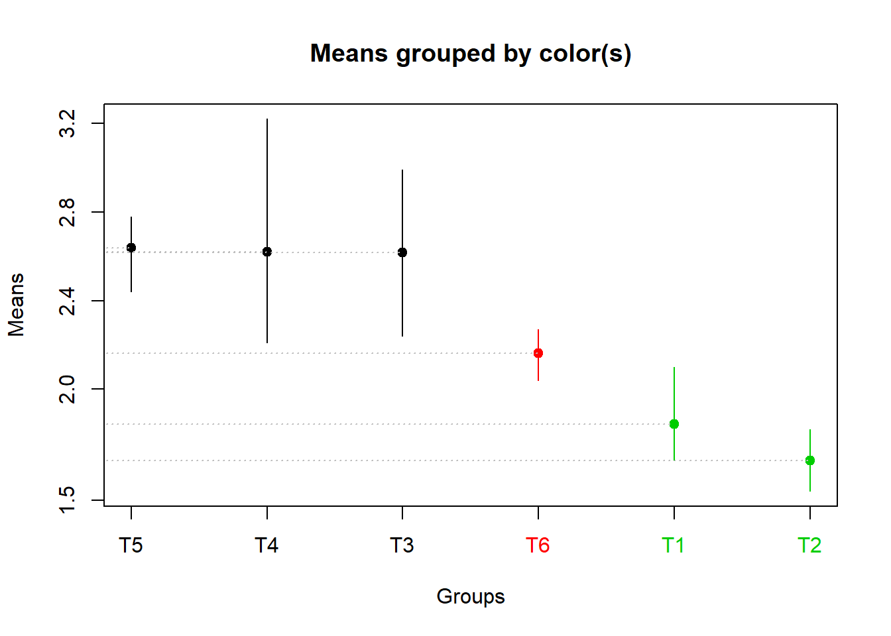
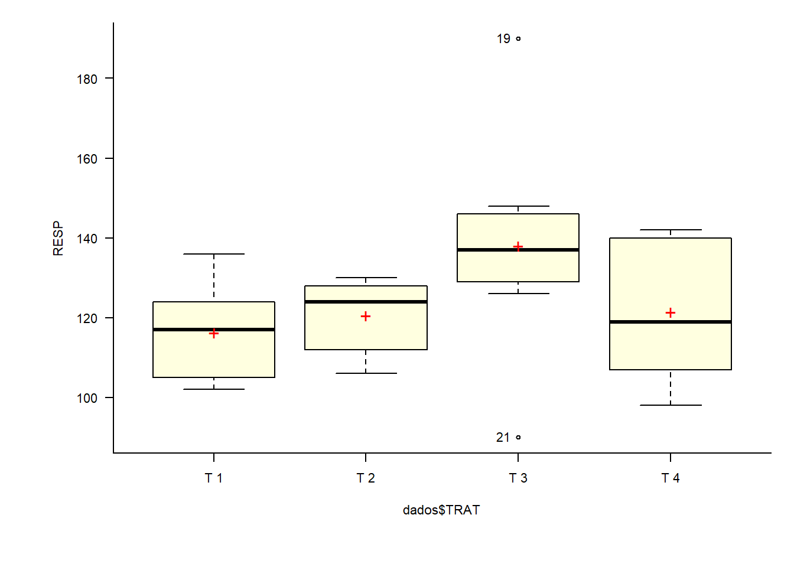

Chapter 2 Delineamento Inteiramente Casualizado
O Delineamento inteiramente casualizado é considerado o delineamento mais simples dentro da estatistica. No DIC as unidades experimentais são destinadas a cada tratamento de uma forma inteiramente casual (sorteio). Os experimentos formulados com este delineamento são denominados “experimentos inteiramente ao acaso”.
O DIC apresenta as seguintes características:
- Considera apenas os princípios de repetição e casulização;
- Os tratamentos são divididos em parcelas de forma inteiramente casual;
- Exige que o material experimental seja semelhante e que as condições de estudo sejam completamentes uniformes;
- Os aspectos que devem ser considerados na semelhança entre as U.E. são aqueles que interferem nas respostas das mesmas aos tratamentos;
- Ele geralmente é mais utilizado em experimentos nos quais as condições experimentais podem ser bastante controladas (por exemplo em laboratórios);
2.1 Vantagens
Delineamento flexível - número de tratamentos e repetições depende apenas da quantidade de parcelas disponíveis
O número de repetições pode diferir de um tratamento para o outro (experimento não balanceado)
A análise estatística é simples
O número de G.L. resíduo é o maior possível
2.2 Desvantagens
Exige homogeneidade das condições ambientais
Pode estimar uma variância residual muito alta
2.3 Modelo matemático para DIC
\[\begin{eqnarray} y_{ji}=\mu+\tau_i+\varepsilon_{ij} \end{eqnarray}\]
\(y_{ji}\): é a observação referente ao tratamento i na repetição j;
\(\mu\): é a média geral (ou constante comum a todas as observações);
\(\tau_i\): é o efeito de tratamento, com \(i = 1, 2, . . . , I\);
\(\varepsilon_{ij}\): é o erro experimental, tal que \(\varepsilon_{ij}\)~N(0; \(\sigma^2\)).
2.4 Hipóteses e Modelo
\[\begin{eqnarray*} \left\{ \begin{array}{ll} H_0: & \mu_1 = \mu_2 =\mu_i\\[.2cm] H_1: & \mu_i \neq \mu_i' \qquad i \neq i'. \end{array} \right. \end{eqnarray*}\]
| CV | G.L. | S.Q. | Q.M. | Fcalc | Ftab |
|---|---|---|---|---|---|
| Tratamentos | \(a - 1\) | \(SQ_{Trat}\) | \(\frac{SQ_{Trat}}{a-1}\) | \(\frac{QMTrat}{QMRes}\) | \(F(\alpha;GL_{Trat} ;GL_{Res})\) |
| resíduo | \(a(b-1)\) | \(SQ_{Res}\) | \(SQRes\) | - | |
| Total | \(ab-1\) | \(SQ_{Total}\) | - | - |
Correção
\(C = \frac{(\sum Y_{ij})^2}{ij}\)
Soma de Quadrados Total
\(SQ_{Total}=\sum Y_{ij}^2-C\)
Soma de Quadrados Tratamento
\(SQ_{Tratamento}=\frac{1}{J}\sum Y_{i}^2-C\)
Soma de Quadrados do resíduo
\(SQ_{Resíduo} = SQ_{Total} - SQ_{Tratamento}\)
Quadrado Médio do Tratamento
\(QM_{Tratamento} = \frac{SQ_{Tratamento}}{GL_{Tratamento}}\)
Quadrado Médio do Resíduo
\(QM_{Resíduo} = \frac{SQ_{Resíduo}}{GL_{Resíduo}}\)
F calculado
\(F_{Calculado}=\frac{QM_{Tratamento}}{QM_{Resíduo}}\)
2.5 Croqui para DIC
Criando uma função para fazer um croqui (Número de colunas igual a número de repetições)
# Não alterar os comandos da função
library(agricolae)
library(gridExtra)
library(grid)
croqui=function(trat,r){
sort=design.crd(trat,r,serie=0)
sort$book[,3]=as.factor(matrix(sort$book[,3],r,,T))
ncol=r
gs <- lapply(sort$book[,3], function(ii)
grobTree(rectGrob(gp=gpar(fill=ii, alpha=0.5)),textGrob(ii)))
grid.arrange(grobs=gs, ncol=ncol)}Vetor de tratamentos
Usando a função

Criando uma função para fazer um croqui (Número de colunas igual a número de tratamentos)
# Não alterar os comandos da função
library(agricolae)
library(gridExtra)
library(grid)
croqui=function(trat,r){
sort=design.crd(trat,r,serie=0)
sort$book[,3]=as.factor(t(matrix(sort$book[,3],r,,T)))
ncol=length(levels(sort$book[,3]))
gs <- lapply(sort$book[,3], function(ii)
grobTree(rectGrob(gp=gpar(fill=ii, alpha=0.5)),textGrob(ii)))
grid.arrange(grobs=gs, ncol=ncol)}Vetor de tratamentos
Usando a função

2.5 Exemplo 1
Um experimento foi conduzido em Delineamento Inteiramente Casualizado composto por 5 tratamentos em 4 repetições
| X1 | X2 | X3 | X4 |
|---|---|---|---|
| T1 (100) | T2 (150) | T1 (110) | T4 (210) |
| T3 (150) | T5 (249) | T2 (149) | T3 (139) |
| T4 (220) | T1 (120) | T4 (206) | T5 (260) |
| T3 (144) | T5 (248) | T3 (134) | T1 (90) |
| T5(266) | T2 (145) | T4 (210) | T2 (165) |
tratamentos=rep(c(paste("T",1:5)),e=4)
resposta=c(100,120,110,90,150,145,149,165,150,144,134,139,220,206,210,210,266,249,248,260)2.5 Análise Descritiva
Media=mean(resposta)
Desvio=sd(resposta)
Variancia=var(resposta)
Maximo=max(resposta)
Minimo=min(resposta)
Mediana=median(resposta)
descritiva=cbind(Media,
Desvio,
Variancia,
Maximo,
Minimo,
Mediana)
kable(descritiva)| Media | Desvio | Variancia | Maximo | Minimo | Mediana |
|---|---|---|---|---|---|
| 173.25 | 55.55924 | 3086.829 | 266 | 90 | 150 |
2.5 Por Tratamento
Media=tapply(resposta,tratamentos, mean)
Desvio=tapply(resposta,tratamentos,sd)
Variancia=tapply(resposta,tratamentos, var)
Maximo=tapply(resposta,tratamentos,max)
Minimo=tapply(resposta,tratamentos, min)
Mediana=tapply(resposta,tratamentos,median)
descritiva=cbind(Media,
Desvio,
Variancia,
Maximo,
Minimo,
Mediana)
kable(descritiva)| Media | Desvio | Variancia | Maximo | Minimo | Mediana | |
|---|---|---|---|---|---|---|
| T 1 | 105.00 | 12.909944 | 166.66667 | 120 | 90 | 105.0 |
| T 2 | 152.25 | 8.770215 | 76.91667 | 165 | 145 | 149.5 |
| T 3 | 141.75 | 6.849574 | 46.91667 | 150 | 134 | 141.5 |
| T 4 | 211.50 | 5.972158 | 35.66667 | 220 | 206 | 210.0 |
| T 5 | 255.75 | 8.732125 | 76.25000 | 266 | 248 | 254.5 |
| Media | Desvio | Variancia | Maximo | Minimo | Mediana | |
|---|---|---|---|---|---|---|
| T 1 | 105.00 | 12.91 | 166.67 | 120 | 90 | 105.0 |
| T 2 | 152.25 | 8.77 | 76.92 | 165 | 145 | 149.5 |
| T 3 | 141.75 | 6.85 | 46.92 | 150 | 134 | 141.5 |
| T 4 | 211.50 | 5.97 | 35.67 | 220 | 206 | 210.0 |
| T 5 | 255.75 | 8.73 | 76.25 | 266 | 248 | 254.5 |
2.5 Gráfico de Caixas (Boxplot)
car::Boxplot(resposta~tratamentos,
las=1,
col="lightblue", xlab="",
ylab=expression("Produtividade"*" "* (Kg*" "*ha^-1)))
points(Media,col="red", pch=8)
2.5 Análise de Variância
Hipóteses:
\[\begin{eqnarray*} \left\{ \begin{array}{ll} H_0: & \mu_1 = \mu_2 = \mu_3 =\mu_4 =\mu_5\\[.2cm] H_1: & \mu_i \neq \mu_i' \qquad i \neq i'. \end{array} \right. \end{eqnarray*}\]
\(H_0: \mu_1=\mu_2=\mu_3=\mu_4=\mu_5\)
\(H_1: \mu_i\neq\mu'_i \qquad i\neq i'\)
| Df | Sum Sq | Mean Sq | F value | Pr(>F) | |
|---|---|---|---|---|---|
| tratamentos | 4 | 57442.50 | 14360.62500 | 178.4298 | 0 |
| Residuals | 15 | 1207.25 | 80.48333 |
Como o p-valor calculado (\(p=1.8747417\times 10^{-12}\)) é menor que o nível de significância adotado (\(\alpha=0,05\)), rejeita \(H_0\). Logo, ao menos dois tratamentos se diferem entre si.
2.5 Pressuposições da Análise
2.5 Normalidade dos erros
\[\begin{eqnarray*} \left\{ \begin{array}{ll} H_0: & \mbox{ Os erros têm distribuição normal} \\[.2cm] H_1: & \mbox{ Os erros não têm distribuição normal}. \end{array} \right. \end{eqnarray*}\]
##
## Shapiro-Wilk normality test
##
## data: modelo$res
## W = 0.95788, p-value = 0.5023Como p-valor calculado (\(p=0.5023389\)) é maior que o nível de significância adotado (\(\alpha=0,05\)), não se rejeita \(H_0\). Logo, os erros seguem distribuição normal.
2.5 Gráfico de normalidade

2.5 Homogeneidade de variâncias
\[\begin{eqnarray*} \left\{ \begin{array}{ll} H_0: & \mbox{ As variâncias são homogêneas} \\[.2cm] H_1: & \mbox{ As variâncias não são homogêneas}. \end{array} \right. \end{eqnarray*}\]
##
## Bartlett test of homogeneity of variances
##
## data: modelo$res by tratamentos
## Bartlett's K-squared = 1.9189, df = 4, p-value = 0.7507Como p-valor calculado (\(p=0.7506686\)) é maior que o nível de significância adotado (\(\alpha=0,05\)), não se rejeita \(H_0\). Logo, as variâncias são homogêneas.
2.5 Independências dos erros
\[\begin{eqnarray*} \left\{ \begin{array}{ll} H_0: & \mbox{ Os erros são independentes;} \\[.2cm] H_1: & \mbox{ Os erros não são independentes.} \end{array} \right. \end{eqnarray*}\]
Como p-valor calculado (\(p=0.1738058\)) é maior que o nível de significância adotado (\(\alpha=0,05\)), não se rejeita \(H_0\). Logo, os erros são independentes. A Figura apresenta o gráfico dos resíduos brutos. Percebe-se que os resíduos estão distribuídos de forma totalmente aleatório, evidenciando a independência dos erros.

2.5 Teste de Comparação Múltipla
tabela=cbind(mod1$Means[1],
mod1$Means[2],
mod1$Means[4])
names(tabela)[1:3]=c("Tratamento","Média","")
tabela| Tratamento | Média | |
|---|---|---|
| T 5 | 255.75 | a |
| T 4 | 211.50 | b |
| T 2 | 152.25 | c |
| T 3 | 141.75 | c |
| T 1 | 105.00 | d |
tukey=c("d","c","c","b","a")
box=car::Boxplot(resposta~tratamentos,
las=1,ylim=c(50,300),
col="lightblue", xlab="",
ylab=expression("Produtividade"*" "* (Kg*" "*ha^-1)))
points(Media,col="red", pch=8)
text(c(1:5),
Media+Desvio+10,
paste(Media,tukey))
2.5 Usando o ExpDes.pt
## ------------------------------------------------------------------------
## Quadro da analise de variancia
## ------------------------------------------------------------------------
## GL SQ QM Fc Pr>Fc
## Tratamento 4 57442 14360.6 178.43 1.8747e-12
## Residuo 15 1207 80.5
## Total 19 58650
## ------------------------------------------------------------------------
## CV = 5.18 %
##
## ------------------------------------------------------------------------
## Teste de normalidade dos residuos
## Valor-p: 0.5023389
## De acordo com o teste de Shapiro-Wilk a 5% de significancia, os residuos podem ser considerados normais.
## ------------------------------------------------------------------------
##
## ------------------------------------------------------------------------
## Teste de homogeneidade de variancia
## valor-p: 0.7506686
## De acordo com o teste de bartlett a 5% de significancia, as variancias podem ser consideradas homogeneas.
## ------------------------------------------------------------------------
##
## Teste de Tukey
## ------------------------------------------------------------------------
## Grupos Tratamentos Medias
## a T 5 255.75
## b T 4 211.5
## c T 2 152.25
## c T 3 141.75
## d T 1 105
## ------------------------------------------------------------------------2.5 Exemplo 2
Dados reais de um experimento conduzido na Universidade Estadual de Londrina

Um experimento foi conduzido com o objetivo de estudar diferentes produtos para redução da perda de massa em pós-colheita de frutos de romã. O experimento foi conduzido em delineamento inteiramente casualizado com quatro repetições.
Os Tratamentos são:
- T1: Cera Externo
- T2: Cera Externo + Interno
- T3: Óleo de Laranja Externo
- T4: Óleo de Laranja Interno + Externo
- T5: Hipoclorito de sódio Externo
- T6: Hipoclorito de sódio Interno + Externo
Os resultados de perda de massa, em porcentagem, foram:
| Tratamentos | R1 | R2 | R3 | R4 |
|---|---|---|---|---|
| 1 | 2.10 | 1.90 | 1.68 | 1.69 |
| 2 | 1.62 | 1.82 | 1.73 | 1.54 |
| 3 | 2.62 | 2.24 | 2.99 | 2.62 |
| 4 | 2.52 | 2.21 | 2.53 | 3.22 |
| 5 | 2.67 | 2.44 | 2.78 | 2.66 |
| 6 | 2.17 | 2.27 | 2.17 | 2.04 |
2.5 Conjunto de dados
resp=c(2.10,1.90,1.68,1.69,1.62,1.82,1.73,1.54,2.62,2.24,2.99,2.62,
2.52,2.21,2.53,3.22,2.67,2.44,2.78,2.66,2.17,2.27,2.17,2.04)
trat=as.factor(rep(paste("T",1:6, sep=""),e=4))2.5 Gráfico de caixas

2.5 Histograma

2.5 Análise de variância
## Analysis of Variance Table
##
## Response: resp
## Df Sum Sq Mean Sq F value Pr(>F)
## trat 5 3.6921 0.73842 12.312 2.724e-05 ***
## Residuals 18 1.0796 0.05998
## ---
## Signif. codes: 0 '***' 0.001 '**' 0.01 '*' 0.05 '.' 0.1 ' ' 12.5 Pressuposições
2.5 Normalidade dos erros
##
## Shapiro-Wilk normality test
##
## data: modelo$residuals
## W = 0.94483, p-value = 0.2088Os erros seguem distribuição normal
2.5 Homogeneidade das variâncias
##
## Bartlett test of homogeneity of variances
##
## data: modelo$residuals by trat
## Bartlett's K-squared = 8.5683, df = 5, p-value = 0.1276As variâncias são homogêneas
2.5 Independência dos erros
##
## Durbin-Watson test
##
## data: modelo
## DW = 2.1048, p-value = 0.1924
## alternative hypothesis: true autocorrelation is greater than 0Os erros são independentes.
2.5 Gráfico de resíduos
a=anova(modelo)
plot(modelo$residuals/sqrt(a$`Mean Sq`[2]), ylab="Resíduos Padronizados")
abline(h=0)
2.5 Teste de comparação múltipla
2.5 Teste de Comparação Múltipla de Tukey (Utilizando o multcomp)

## T1 T2 T3 T4 T5 T6
## "a" "a" "b" "b" "b" "ab"2.5 Teste de Comparação Múltipla de Tukey (Utilizando o TukeyHSD do R)
## Tukey multiple comparisons of means
## 95% family-wise confidence level
##
## Fit: aov(formula = resp ~ trat)
##
## $trat
## diff lwr upr p adj
## T2-T1 -0.1650 -0.71534348 0.38534348 0.9268309
## T3-T1 0.7750 0.22465652 1.32534348 0.0033733
## T4-T1 0.7775 0.22715652 1.32784348 0.0032716
## T5-T1 0.7950 0.24465652 1.34534348 0.0026408
## T6-T1 0.3200 -0.23034348 0.87034348 0.4623788
## T3-T2 0.9400 0.38965652 1.49034348 0.0004555
## T4-T2 0.9425 0.39215652 1.49284348 0.0004421
## T5-T2 0.9600 0.40965652 1.51034348 0.0003589
## T6-T2 0.4850 -0.06534348 1.03534348 0.1030235
## T4-T3 0.0025 -0.54784348 0.55284348 1.0000000
## T5-T3 0.0200 -0.53034348 0.57034348 0.9999965
## T6-T3 -0.4550 -1.00534348 0.09534348 0.1409264
## T5-T4 0.0175 -0.53284348 0.56784348 0.9999982
## T6-T4 -0.4575 -1.00784348 0.09284348 0.1373682
## T6-T5 -0.4750 -1.02534348 0.07534348 0.1145358
2.5 Teste de Comparação Múltipla de Tukey (Utilizando o HSD.test do Agricolae)

2.5 Teste de Comparação Múltipla de Tukey (Utilizando o ea1() do pacote easyanova)
## treatment mean tukey
## 1 T5 2.6375 a
## 2 T4 2.6200 a
## 3 T3 2.6175 a
## 4 T6 2.1625 ab
## 5 T1 1.8425 b
## 6 T2 1.6775 b2.5 Teste de Comparação Múltipla de Tukey (Utilizando o dic do pacote ExpDes.pt)
## ------------------------------------------------------------------------
## Quadro da analise de variancia
## ------------------------------------------------------------------------
## GL SQ QM Fc Pr>Fc
## Tratamento 5 3.6921 0.73842 12.312 2.7235e-05
## Residuo 18 1.0796 0.05998
## Total 23 4.7717
## ------------------------------------------------------------------------
## CV = 10.84 %
##
## ------------------------------------------------------------------------
## Teste de normalidade dos residuos
## Valor-p: 0.2087967
## De acordo com o teste de Shapiro-Wilk a 5% de significancia, os residuos podem ser considerados normais.
## ------------------------------------------------------------------------
##
## ------------------------------------------------------------------------
## Teste de homogeneidade de variancia
## valor-p: 0.1275737
## De acordo com o teste de bartlett a 5% de significancia, as variancias podem ser consideradas homogeneas.
## ------------------------------------------------------------------------
##
## Teste de Tukey
## ------------------------------------------------------------------------
## Grupos Tratamentos Medias
## a T5 2.6375
## a T4 2.62
## a T3 2.6175
## ab T6 2.1625
## b T1 1.8425
## b T2 1.6775
## ------------------------------------------------------------------------2.5 Teste de Comparação Múltipla de Tukey (Utilizando o LTukey do pacote laercio)
##
## TUKEY TEST TO COMPARE MEANS
##
## Confidence level: 0.95
## Dependent variable: resp
## Variation Coefficient: 10.83832 %
##
## Independent variable: trat
## Factors Means
## T5 2.6375 a
## T4 2.62 a
## T3 2.6175 a
## T6 2.1625 ab
## T1 1.8425 b
## T2 1.6775 b
##
## 2.5 Teste de comparação de Duncan (Utilizando o LDuncan do pacote laercio)
##
## DUNCAN TEST TO COMPARE MEANS
##
## Confidence Level: 0.95
## Dependent Variable: resp
## Variation Coefficient: 10.83832 %
##
##
## Independent Variable: trat
## Factors Means
## T5 2.6375 a
## T4 2.62 a
## T3 2.6175 a
## T6 2.1625 b
## T1 1.8425 bc
## T2 1.6775 c2.5 Teste de comparação de Duncan (Utilizando o dic do pacote ExpDes.pt)
## ------------------------------------------------------------------------
## Quadro da analise de variancia
## ------------------------------------------------------------------------
## GL SQ QM Fc Pr>Fc
## Tratamento 5 3.6921 0.73842 12.312 2.7235e-05
## Residuo 18 1.0796 0.05998
## Total 23 4.7717
## ------------------------------------------------------------------------
## CV = 10.84 %
##
## ------------------------------------------------------------------------
## Teste de normalidade dos residuos
## Valor-p: 0.2087967
## De acordo com o teste de Shapiro-Wilk a 5% de significancia, os residuos podem ser considerados normais.
## ------------------------------------------------------------------------
##
## ------------------------------------------------------------------------
## Teste de homogeneidade de variancia
## valor-p: 0.1275737
## De acordo com o teste de bartlett a 5% de significancia, as variancias podem ser consideradas homogeneas.
## ------------------------------------------------------------------------
##
## Teste de Duncan
## ------------------------------------------------------------------------
## Grupos Tratamentos Medias
## a T5 2.6375
## a T4 2.62
## a T3 2.6175
## b T6 2.1625
## bc T1 1.8425
## c T2 1.6775
## ------------------------------------------------------------------------2.5 Teste de Agrupamento de Duncan (Utilizando o ea1() do pacote easyanova)
## treatment mean duncan
## 1 T5 2.6375 a
## 2 T4 2.6200 a
## 3 T3 2.6175 a
## 4 T6 2.1625 b
## 5 T1 1.8425 bc
## 6 T2 1.6775 c2.5 Teste de Agrupamento de Scott-Knott (Utilizando o SK do pacote ScottKnott)
library(ScottKnott)
sk <- SK(x=resp, y=resp, model="y~trat", which="trat", sig.level=0.05)
summary(sk)## Levels Means SK(5%)
## T5 2.6375 a
## T4 2.6200 a
## T3 2.6175 a
## T6 2.1625 b
## T1 1.8425 c
## T2 1.6775 c
2.5 Teste de Agrupamento de Scott-Knott (Utilizando o ea1() do pacote easyanova)
## treatment mean scott_knott
## 1 T5 2.6375 a
## 2 T4 2.6200 a
## 3 T3 2.6175 a
## 4 T6 2.1625 b
## 5 T1 1.8425 c
## 6 T2 1.6775 c2.5 Teste de Agrupamento de Scott-Knott (Utilizando o LScottKnott do pacote laercio)
Obs. O Comando do pacote laercio (Versão 1.0-1) não funciona no Rmarkdown e gera um erro (Problema no scan(), possivelmente o comando do pacote utiliza o scan() para efetuar sua análise e o mesmo não funciona no Rmarkdown a menos que o texto esteja entre aspas).
O Erro gerado é:
Error in scan(file = file, what = what, sep = sep, quote = quote, dec = dec,:line 4 did not have 2 elements
2.5 Transformação de dados
- O modelo de Análise de Variância pressupõe que exista homocedasticidade, ou seja, que os tratamentos apresentem a mesma variabilidade;
- Algumas vezes este pressuposto pode não ser atendido e assim, para corrigir este problema existe uma saída por vezes bastante simples que é a transformação de dados;
- Esta técnica consiste na utilização de um artifício matemático para tornar o modelo de ANOVA válido.
2.5 Heterogeneidade Irregular
Ocorre quando alguns tratamentos apresentam maior variabilidade do que outros, contudo, não existe uma associação entre média e variância;
Neste caso, não há uma transformação matemática que elimine esta variabilidade.
Solução:
Modelos Lineares Generalizados;
Análise não paramétrica.
2.5 Heterogeneidade Regular
- Acontece quando existe alguma associação entre as médias dos tratamentos e a variância;
- A heterocedasticidade regular está associada é falta de normalidade do erros;
Solução:
Transformação dos dados;
Modelos Lineares Generalizados;
Análise não paramétrica.
2.5 Princípio de transformação
Seja \(E(Y) = \mu\) a média de Y e suponha que o desvio padrão de Y é proporcional a potência da média de Y tal que:
\(\sigma Y \alpha \mu^\alpha.\)
O objetivo é encontrar uma transformação de \(Y\) que gere uma variância constante.
Suponha que a transformação é uma potência dos dados originais, isto é:
\(Y^*=Y^\lambda\)
Assim, pode ser mostrado que:
\(\sigma Y^* \alpha \mu^{\lambda+ \alpha-1}.\)
Caso \(\lambda = 1-\alpha\), então a variância dos dados transformados \(Y^*\) é constante, mostrando que não é necessário transformação.
Algumas das transformações mais comuns são:
| \(\lambda\) | Transformação |
|---|---|
| 1 | Nenhuma |
| 0,5 | \(\sqrt{y}\) |
| 0 | log(y) |
| -0,5 | \(\frac{1}{\sqrt{y}}\) |
| -1 | \(\frac{1}{y}\) |
2.5 Seleção Empírica de \(\alpha\)
Em muitas situações de delineamentos experimentais em que há repetições, pode-se estimar empiricamente \(\alpha\) a partir dos dados.
Dado que na i-ésima combinação de tratamentos
\(\sigma Y \alpha \mu^{\alpha}_i =\theta \mu^{\alpha}_i\)
em que \(\theta\) é uma constante de proporcionalidade, pode-se aplicar logaritmos para obter:
\(log (\sigma_{Y_i}) = log( \theta) + \alpha log( \mu_{i})\)
Portanto, um gráfico de \(log(\sigma_{Y_i})\) versus \(log(\mu_i)\) seria uma linha reta com uma inclinação \(\alpha\).
Como não se conhece \(\sigma_{Y_i}\) e \(\mu_i\) , utilizam-se as estimativas \(s_i\) e a média \(\hat{Y}_i\), respectivamente;
O parâmetro de inclinação da equação linear ajustada é uma estimativa de \(\alpha\).
2.5 Transf. de Box & Cox
Box & Cox (1964) mostraram como o parâmetro de transformação \(\lambda\) em \(Y^* = Y^\lambda\) pode ser estimado simultaneamente com outros parâmetros do modelo (média geral e efeitos de tratamentos) usando o método de máxima verossimilhança. O procedimento consiste em realizar, para vários valores de \(\lambda\), uma análise de variância padrão sobre:
\[Y_i(\lambda) = \left\{ \begin{array}{ll} \ln(X_i),~~~~~~\textrm{se $\lambda = 0$,} \\ \\ \dfrac{X_i^{\lambda} - 1}{\lambda},~~~~\textrm{se $\lambda \neq 0$,}\end{array} \right.\]
A estimativa de máxima verossimilhança de \(\lambda\) é o valor para o qual a soma de quadrado do resíduo, SQRes(\(\lambda\)), é mínima.
Este valor de \(\lambda\) é encontrado através do gráfico de SQRes(\(\lambda\)) versus \(\lambda\), sendo que \(\lambda\) é o valor que minimiza a SQRes(\(\lambda\)).
Ou, ainda, o valor de \(\lambda\) que maximiza a função de logverossimilhança.
Um intervalo de confiança \(100(1-\alpha)\)% para \(\lambda\) pode ser encontrado calculando-se:
\(IC(\lambda) = SQRes(\lambda)(1 \pm \frac{t2^2/2=2;v }{v})\)
em que \(v\) é o número de graus de liberdade.
Se o intervalo de confiança incluir o valor \(\lambda = 1\), isto quer dizer que não é necessário transformar os dados.
2.5 Exemplo 1

Vamos considerar os dados adaptados de ZAMBÃO; SAMPAIO; BARBIN, 1982 (Livro Planejamento e Análise Estatística de Experimentos Agronômicos - Décio Barbin) como exemplo, em que o pesquisador pretende comparar quatro cultivares de pêssego quanto ao enraizamento de estacas. Foi utilizado cinco repetições por tratamento e o delineamento experimental foi inteiramente casualizado.
Fonte da foto: Rosa, G.G., 2014 (Pelotas)
| Tratamentos | R1 | R2 | R3 | R4 | R5 | TOTAL |
|---|---|---|---|---|---|---|
| A | 02 | 02 | 01 | 01 | 00 | 06 |
| B | 01 | 00 | 00 | 01 | 01 | 03 |
| C | 12 | 10 | 14 | 17 | 11 | 64 |
| D | 07 | 09 | 15 | 08 | 10 | 49 |
2.5 Conjunto de dados
resposta=c(02,02,01,01,00,01,00,00,01,01,12,10,14,17,11,07,09,15,08,10)
cultivar=rep(LETTERS[1:4],e=5)
cultivar=as.factor(cultivar)2.5 Gráficos exploratórios
2.5 Gráfico de caixas

## [1] "18"2.5 Histograma

2.5 Análise de variância
## Analysis of Variance Table
##
## Response: resposta
## Df Sum Sq Mean Sq F value Pr(>F)
## cultivar 3 564.2 188.07 40.884 9.945e-08 ***
## Residuals 16 73.6 4.60
## ---
## Signif. codes: 0 '***' 0.001 '**' 0.01 '*' 0.05 '.' 0.1 ' ' 12.5 Pressuposições
2.5 Normalidade dos erros
##
## Shapiro-Wilk normality test
##
## data: modelo$residuals
## W = 0.88533, p-value = 0.02209Os erros não seguem distribuição normal
2.5 Homogeneidade das variâncias
##
## Bartlett test of homogeneity of variances
##
## data: modelo$residuals by cultivar
## Bartlett's K-squared = 12.141, df = 3, p-value = 0.006914As variâncias não são homogêneas
2.5 Independência dos erros
##
## Durbin-Watson test
##
## data: modelo
## DW = 2.269, p-value = 0.4631
## alternative hypothesis: true autocorrelation is greater than 0Os erros são independentes.
2.5 Gráfico de resíduos padronizados
a=anova(modelo)
plot(modelo$residuals/sqrt(a$`Mean Sq`[2]), ylab="Resíduos Padronizados")
abline(h=0)
As pressuposições de normalidade dos erros e homogeneidade das variâncias não foram atendidas. Dessa forma, vamos transformar os dados e conferir novamente as pressuposições!
2.5 Transformação de dados
2.5 Usando a package MASS
2.5 Usando o comando boxcox e conferindo visualmente um valor aproximado de \(\lambda\)
# MASS::boxcox(modelo) ## o comando boxcox do pacote MASS não aceita quando ocorre observações 0
# vamos somar uma constante com valor "baixo"
MASS::boxcox(aov(resposta+0.000001~cultivar))
2.5 Descobrindo o valor exato de \(\lambda\)

## [1] 0.4242424A aproximação de \(\lambda\) é 0,5 (sqrt(Y))
2.5 Dados transformados
2.5 Modelo transformado
2.5 Normalidade dos erros
##
## Shapiro-Wilk normality test
##
## data: modelo$residuals
## W = 0.96828, p-value = 0.7182Os erros seguem distribuição normal
2.5 Homogeneidade das variâncias
##
## Bartlett test of homogeneity of variances
##
## data: modelo$residuals by cultivar
## Bartlett's K-squared = 0.71659, df = 3, p-value = 0.8693As variâncias são homogêneas
2.5 Independência dos erros
##
## Durbin-Watson test
##
## data: modelo
## DW = 2.1575, p-value = 0.3596
## alternative hypothesis: true autocorrelation is greater than 0Os erros são independentes.
2.5 Gráfico de resíduos padronizados
a=anova(modelo)
plot(modelo$residuals/sqrt(a$`Mean Sq`[2]), ylab="Resíduos Padronizados")
abline(h=0)
2.5 Comparação múltipla
2.5 Teste de Comparação Múltipla de Tukey (Utilizando o multcomp)

## A B C D
## "a" "a" "b" "b"2.5 Teste de Comparação Múltipla de Tukey (Utilizando o TukeyHSD do R)
## Tukey multiple comparisons of means
## 95% family-wise confidence level
##
## Fit: aov(formula = sqrt(resposta) ~ cultivar)
##
## $cultivar
## diff lwr upr p adj
## B-A -0.3656854 -1.271030 0.5396592 0.6619314
## C-A 2.5958680 1.690523 3.5012126 0.0000022
## D-A 2.1362025 1.230858 3.0415471 0.0000252
## C-B 2.9615534 2.056209 3.8668981 0.0000004
## D-B 2.5018879 1.596543 3.4072325 0.0000035
## D-C -0.4596655 -1.365010 0.4456791 0.4869422
2.5 Teste de Comparação Múltipla de Tukey (Utilizando o HSD.test do Agricolae)

2.5 Teste de Comparação Múltipla de Tukey (Utilizando o ea1() do pacote easyanova)
## treatment mean tukey
## 1 C 3.5616 a
## 2 D 3.1019 a
## 3 A 0.9657 b
## 4 B 0.6000 b2.5 Teste de Comparação Múltipla de Tukey (Utilizando o dic do pacote ExpDes.pt)
## ------------------------------------------------------------------------
## Quadro da analise de variancia
## ------------------------------------------------------------------------
## GL SQ QM Fc Pr>Fc
## Tratamento 3 33.346 11.1155 44.402 5.5521e-08
## Residuo 16 4.005 0.2503
## Total 19 37.352
## ------------------------------------------------------------------------
## CV = 24.32 %
##
## ------------------------------------------------------------------------
## Teste de normalidade dos residuos
## Valor-p: 0.7181511
## De acordo com o teste de Shapiro-Wilk a 5% de significancia, os residuos podem ser considerados normais.
## ------------------------------------------------------------------------
##
## ------------------------------------------------------------------------
## Teste de homogeneidade de variancia
## valor-p: 0.8692942
## De acordo com o teste de bartlett a 5% de significancia, as variancias podem ser consideradas homogeneas.
## ------------------------------------------------------------------------
##
## Teste de Tukey
## ------------------------------------------------------------------------
## Grupos Tratamentos Medias
## a C 3.561553
## a D 3.101888
## b A 0.9656854
## b B 0.6
## ------------------------------------------------------------------------2.5 Exemplo 2
2.5 Conjunto de dados
Um experimento foi conduzido com o intuito de avaliar a inoculação de Trichoderma sp. (T4), Azospirillum sp. (T3) e associação de ambos (T2) em relação a testemunha, quanto à altura de plantas de milho. O experimento foi conduzido em delineamento inteiramente casualizado com 8 repetições.
RESP=c(124,136,124,102,112,108,102,122,
130,128,118,106,126,106,128,122,
132,132,190,144,090,126,142,148,
140,120,118,098,110,140,104,142)
TRAT=rep(c(paste("T",1:4)),e=8)
dados = data.frame(TRAT, RESP)2.5 Estatística descritiva
Média = with(dados, mean(RESP))
Variância = with(dados, var(RESP))
Desvio = with(dados, sd(RESP))
CV = Desvio / Média * 100
desc = cbind(Média, Variância, Desvio, CV)
kable(round(desc,2), align="l")| Média | Variância | Desvio | CV |
|---|---|---|---|
| 124.06 | 367.09 | 19.16 | 15.44 |
2.5 Por Cultivar
Médias = with(dados, tapply(RESP, TRAT, mean))
Variâncias = with(dados, tapply(RESP, TRAT, var))
Desvios = with(dados, tapply(RESP, TRAT, sd))
CV = Desvios / Médias * 100
Desc = cbind(Médias, Variâncias, Desvios, CV)
kable(round(Desc,2),align="l")| Médias | Variâncias | Desvios | CV | |
|---|---|---|---|---|
| T 1 | 116.25 | 147.93 | 12.16 | 10.46 |
| T 2 | 120.50 | 94.57 | 9.72 | 8.07 |
| T 3 | 138.00 | 768.00 | 27.71 | 20.08 |
| T 4 | 121.50 | 301.43 | 17.36 | 14.29 |
2.5 Gráficos exploratórios
2.5 Gráfico de Caixas
par(bty='l', mai=c(1, 1, .2, .2))
par(cex=0.7)
caixas=with(dados, car::Boxplot(RESP ~ dados$TRAT, vertical=T,las=1, col='Lightyellow'))
mediab=tapply(RESP, TRAT, mean)
points(mediab, pch='+', cex=1.5, col='red')
2.5 Análise de Variância
\[\begin{eqnarray*} \left\{ \begin{array}{ll} H_0: & \mu_1 = \mu_2 = \mu_3 = \cdots = \mu_{15} \\[.2cm] H_1: & \mu_i \neq \mu_i' \qquad i \neq i'. \end{array} \right. \end{eqnarray*}\]
| Df | Sum Sq | Mean Sq | F value | Pr(>F) | |
|---|---|---|---|---|---|
| TRAT | 3 | 2196.375 | 732.1250 | 2.23221 | 0.1064722 |
| Residuals | 28 | 9183.500 | 327.9821 |
2.5 Pressuposições
2.5 Normalidade dos erros
\[\begin{eqnarray*} \left\{ \begin{array}{ll} H_0: & \mbox{Os erros seguem distribuição normal}\\[.2cm] H_1: & \mbox{Os erros não seguem distribuição normal}. \end{array} \right. \end{eqnarray*}\]
##
## Shapiro-Wilk normality test
##
## data: mod$res
## W = 0.94078, p-value = 0.07878Como p-valor calculado (\(p=0,07878\)) é maior que o nível de significância adotado (\(p=0,05\)), não se rejeita \(H_0\). Logo, os erros seguem distribuição normal.

2.5 Homogeneidade de variâncias
\[\begin{eqnarray*} \left\{ \begin{array}{ll} H_0: & \mbox{ As variâncias são homogêneas}\\[.2cm] H_1: & \mbox{ As variâncias não são homogêneas}. \end{array} \right. \end{eqnarray*}\]
##
## Bartlett test of homogeneity of variances
##
## data: mod$res by TRAT
## Bartlett's K-squared = 8.4132, df = 3, p-value = 0.0382Como p-valor (\(p=0,0382\)) é menor que o nível de significância adotado (\(p=0,05\)). Rejeita-se \(H_0\), logo, as variâncias dos erros não são homogêneas.
2.5 Transformação de dados

## [1] -0.2222222O valor de \(\lambda\) para a Transformação Box-Cox é -0,22222. Nesse sentido, vamos usar a aproximação. Logo, iremos usar a Transformação Log
2.5 Transformação log
2.5 Modelo com dados transformados
Devemos testar novamente as pressuposições após a Transformação!!!
## Analysis of Variance Table
##
## Response: log(RESP)
## Df Sum Sq Mean Sq F value Pr(>F)
## TRAT 3 0.11275 0.037583 1.8407 0.1627
## Residuals 28 0.57170 0.020418Como p-valor da análise de variância (\(p=0,1627\)) é maior que o nível de significância adotado, não se rejeita \(H_0\). Logo, não há evidências de diferença entre os tratamentos.
2.5 Normalidade dos erros
##
## Shapiro-Wilk normality test
##
## data: modelo$residuals
## W = 0.95442, p-value = 0.19222.5 Homogeneidade das variâncias
##
## Bartlett test of homogeneity of variances
##
## data: modelo$residuals by TRAT
## Bartlett's K-squared = 6.2678, df = 3, p-value = 0.099282.5 Independências dos erros
##
## Durbin-Watson test
##
## data: modelo
## DW = 1.9204, p-value = 0.216
## alternative hypothesis: true autocorrelation is greater than 02.5 Usando os pacotes easyanova e ExpDes.pt
## $`Analysis of variance`
## df type I SS mean square F value p>F
## treatments 3 0.1127 0.0376 1.8407 0.1627
## Residuals 28 0.5717 0.0204 - -
##
## $Means
## treatment mean standard.error tukey snk duncan t scott_knott
## 1 T 3 4.9089 0.0505 a a a a a
## 2 T 4 4.7909 0.0505 a a a ab a
## 3 T 2 4.7887 0.0505 a a a ab a
## 4 T 1 4.7510 0.0505 a a a b a
##
## $`Multiple comparison test`
## pair contrast p(tukey) p(snk) p(duncan) p(t)
## 1 T 3 - T 4 0.1180 0.3671 0.1097 0.1097 0.1097
## 2 T 3 - T 2 0.1202 0.3512 0.2293 0.1221 0.1035
## 3 T 3 - T 1 0.1579 0.1449 0.1449 0.0509 0.0354
## 4 T 4 - T 2 0.0022 1.0000 0.9756 0.9756 0.9756
## 5 T 4 - T 1 0.0399 0.9434 0.8429 0.6036 0.5808
## 6 T 2 - T 1 0.0377 0.9516 0.6017 0.6017 0.6017
##
## $`Residual analysis`
## $`Residual analysis`$`residual analysis`
## values
## p.value Shapiro-Wilk test 0.1922
## p.value Bartlett test 0.0993
## coefficient of variation (%) 2.9700
## first value most discrepant 21.0000
## second value most discrepant 19.0000
## third value most discrepant 28.0000
##
## $`Residual analysis`$residuals
## 1 2 3 4 5 6
## 0.069304717 0.161678037 0.069304717 -0.126004035 -0.032477977 -0.068845621
## 7 8 9 10 11 12
## -0.126004035 0.053044196 0.078851858 0.063347671 -0.017997968 -0.125243499
## 13 14 15 16 17 18
## 0.047599314 -0.125243499 0.063347671 0.015338452 -0.026144593 -0.026144593
## 19 20 21 22 23 24
## 0.338077556 0.060866784 -0.409136845 -0.072664609 0.046880542 0.088265758
## 25 26 27 28 29 30
## 0.150751546 -0.003399134 -0.020206252 -0.205923398 -0.090410511 0.150751546
## 31 32
## -0.146499978 0.164936181
##
## $`Residual analysis`$`standardized residuals`
## 1 2 3 4 5 6
## 0.51034208 1.19055541 0.51034208 -0.92786125 -0.23915946 -0.50696142
## 7 8 9 10 11 12
## -0.92786125 0.39060380 0.58064476 0.46647593 -0.13253240 -0.92226086
## 13 14 15 16 17 18
## 0.35050909 -0.92226086 0.46647593 0.11294841 -0.19252205 -0.19252205
## 19 20 21 22 23 24
## 2.48951602 0.44820731 -3.01277832 -0.53508346 0.34521623 0.64996630
## 25 26 27 28 29 30
## 1.11009554 -0.02503035 -0.14879364 -1.51636685 -0.66575971 1.11009554
## 31 32
## -1.07878809 1.21454754## ------------------------------------------------------------------------
## Quadro da analise de variancia
## ------------------------------------------------------------------------
## GL SQ QM Fc Pr>Fc
## Tratamento 3 0.11275 0.037583 1.8407 0.1627
## Residuo 28 0.57170 0.020418
## Total 31 0.68444
## ------------------------------------------------------------------------
## CV = 2.97 %
##
## ------------------------------------------------------------------------
## Teste de normalidade dos residuos
## Valor-p: 0.1921639
## De acordo com o teste de Shapiro-Wilk a 5% de significancia, os residuos podem ser considerados normais.
## ------------------------------------------------------------------------
##
## ------------------------------------------------------------------------
## Teste de homogeneidade de variancia
## valor-p: 0.09928479
## De acordo com o teste de bartlett a 5% de significancia, as variancias podem ser consideradas homogeneas.
## ------------------------------------------------------------------------
##
## De acordo com o teste F, as medias nao podem ser consideradas diferentes.
## ------------------------------------------------------------------------
## Niveis Medias
## 1 T 1 4.750977
## 2 T 2 4.788683
## 3 T 3 4.908947
## 4 T 4 4.790891
## ------------------------------------------------------------------------2.5 Delineamento em Blocos Casualizados
- O delineamento em blocos ao acaso ou o delineamento em blocos casualizados são aqueles que levam em consideração os 3 princípios básicos da experimentação;
- O controle local é feito na sua forma mais simples e é chamado de blocos;
- Sempre que não houver homogeneidade das condições experimentais, deve-se utilizar o princípio do controle local;
- Estabelece-se, então, sub-ambientes homogêneos (blocos) e instalando, em cada um deles, todos os tratamentos, igualmente repetidos;
- Nessas condições, o delineamento em blocos casualizados é mais eficiente que o inteiramente ao acaso e, essa eficiência depende da uniformidade das parcelas de cada bloco;
- Pode-se haver diferenças bem acentuadas de um bloco para outro.
- O número de blocos e de repetições coincide apenas quando os tratamentos ocorrem uma única vez em cada bloco.
2.5 Vantagens
- Controla as diferenças que ocorrem nas condições ambientais, de um bloco para outro;
- Conduz a uma estimativa mais exata para a variância residual, uma vez que a variação ambiental entre blocos é isolada.
2.5 Desvantagens
- Pela utilização do princípio do controle local, há uma redução no número de graus de liberdade do resíduo;
- Exigência de homogeneidade das parcelas dentro de cada bloco limita o número de tratamentos, que não pode ser muito elevado.
2.5 Modelo matemático
\[\begin{eqnarray} y_{ji}=\mu+\tau_i+\beta_j+\varepsilon_{ij} \end{eqnarray}\]
\(y_{ji}\): é a observação referente ao tratamento i no bloco j;
\(\mu\): é a média geral (ou constante comum a todas as observações);
\(\tau_i\): é o efeito de tratamento, com \(i = 1, 2, . . . , I\);
\(\beta_j\): é o efeito do bloco;
\(\varepsilon_{ij}\): é o erro experimental, tal que \(\varepsilon_{ij}\)~N(0; \(\sigma^2\)).
2.5 Hipóteses e Modelo
\[\begin{eqnarray*} \left\{ \begin{array}{ll} H_0: & \mu_1 = \mu_2 =\mu_i\\[.2cm] H_1: & \mu_i \neq \mu_i' \qquad i \neq i'. \end{array} \right. \end{eqnarray*}\]
| CV | G.L. | S.Q. | Q.M. | Fcalc | Ftab |
|---|---|---|---|---|---|
| Tratamentos | \(a - 1\) | \(SQ_{Trat}\) | \(\frac{SQ_{Trat}}{a-1}\) | \(\frac{QMTrat}{QMRes}\) | \(F(\alpha;GL_{Trat} ;GL_{Res})\) |
| Blocos | \(b-1\) | \(Sq_{Blocos}\) | \(\frac{SQ_{Blocos}}{b-1}\) | \(\frac{QM_{bloco}}{QM_{Res}}\) | \(F(\alpha;GL_{bloco} ;GL_{Res})\) |
| resíduo | \((a-1)(b-1)\) | \(SQ_{Res}\) | \(\frac{SQRes}{(a-1)(b-1)}\) | - | |
| Total | \(ab-1\) | \(SQ_{Total}\) | - | - |
2.5 Croqui
Criando uma função para fazer um croqui (Bloco em coluna)
# Não alterar os comandos da função
library(agricolae)
library(gridExtra)
library(grid)
croqui=function(trat,r){
sort=design.rcbd(trat,r,serie=0)
sort$book[,3]=as.factor(matrix(sort$book[,3],r,,T))
ncol=r
gs <- lapply(sort$book[,3], function(ii)
grobTree(rectGrob(gp=gpar(fill=ii, alpha=0.5)),textGrob(ii)))
grid.arrange(grobs=gs, ncol=ncol)}Vetor de tratamentos
Usando a função

Criando uma função para fazer um croqui (Bloco em linha)
# Não alterar os comandos da função
library(agricolae)
library(gridExtra)
library(grid)
croqui=function(trat,r){
sort=design.rcbd(trat,r,serie=0)
sort$book[,3]=as.factor(t(matrix(sort$book[,3],r,,T)))
ncol=length(levels(sort$book[,3]))
gs <- lapply(sort$book[,3], function(ii)
grobTree(rectGrob(gp=gpar(fill=ii, alpha=0.5)),textGrob(ii)))
grid.arrange(grobs=gs, ncol=ncol)}Vetor de tratamentos
Usando a função

2.5 Exemplo 1
Exemplo do Livro Planejamento e Análise Estatística de Experimentos Agronômicos (2013) - Décio Barbin - pg. 72

Um experimento foi conduzido com o objetivo de estudar o comportamento de nove porta-enxertos para a laranjeira Valência.
Os porta-enxertos são:
- T1: Tangerina Sunki
- T2: Limão rugoso Nacional
- T3: Limão rugoso da Flórida
- T4: Tangerina Cleópatra
- T5: Citranger-troyer
- T6: Trifoliata
- T7: Tangerina Cravo
- T8: Laranja caipira
- T9: Limão Cravo
Delineamento experimental: Blocos casualizados.
Repetições/Tratamento: 3 repetições
Croqui experimental é apresentado abaixo:
| Bloco | |||||||||
|---|---|---|---|---|---|---|---|---|---|
| B1 | T3 | T1 | T4 | T8 | T6 | T7 | T2 | T9 | T5 |
| B2 | T7 | T3 | T9 | T4 | T2 | T5 | T1 | T6 | T8 |
| B3 | T8 | T6 | T2 | T1 | T7 | T9 | T3 | T4 | T5 |
Para o ano de 1973 (Plantas com 12 anos de idade), os resultados de produção, em número médio de frutos por planta, foram:
| Tratamentos | B1 | B2 | B3 | Total |
|---|---|---|---|---|
| 1 | 145 | 155 | 166 | 466 |
| 2 | 200 | 190 | 190 | 580 |
| 3 | 183 | 186 | 208 | 577 |
| 4 | 190 | 175 | 186 | 551 |
| 5 | 180 | 160 | 156 | 496 |
| 6 | 130 | 160 | 130 | 420 |
| 7 | 206 | 165 | 170 | 541 |
| 8 | 250 | 271 | 230 | 751 |
| 9 | 164 | 190 | 193 | 547 |
| Total | 1648 | 1652 | 1629 | 4929 |
2.5 Conjunto de dados
resposta=c(145,155,166,
200,190,190,
183,186,208,
190,175,186,
180,160,156,
130,160,130,
206,165,170,
250,271,230,
164,190,193)
cultivar=rep(c(paste("T",1:9)),e=3)
cultivar=as.factor(cultivar)
bloco=as.factor(rep(c(paste("B",1:3)),9))2.5 Gráficos exploratórios
2.5 Gráfico de caixas

2.5 Histograma

2.5 Análise de variância
## Analysis of Variance Table
##
## Response: resposta
## Df Sum Sq Mean Sq F value Pr(>F)
## cultivar 8 22981.3 2872.67 11.4114 2.637e-05 ***
## bloco 2 33.6 16.78 0.0666 0.9358
## Residuals 16 4027.8 251.74
## ---
## Signif. codes: 0 '***' 0.001 '**' 0.01 '*' 0.05 '.' 0.1 ' ' 12.5 Pressuposições
2.5 Normalidade dos erros
##
## Shapiro-Wilk normality test
##
## data: modelo$residuals
## W = 0.94759, p-value = 0.1873Os erros seguem distribuição normal
2.5 Homogeneidade das variâncias
##
## Bartlett test of homogeneity of variances
##
## data: modelo$residuals by cultivar
## Bartlett's K-squared = 4.0369, df = 8, p-value = 0.8538As variâncias são homogêneas
2.5 Independência dos erros
##
## Durbin-Watson test
##
## data: modelo
## DW = 2.3246, p-value = 0.2484
## alternative hypothesis: true autocorrelation is greater than 0Os erros são independentes.
2.5 Teste de Aditividade de Tukey
##
## Tukey's one df test for additivity
## F = 0.6866169 Denom df = 15 p-value = 0.42030762.5 Gráfico de resíduos padronizados
a=anova(modelo)
plot(modelo$residuals/sqrt(a$`Mean Sq`[3]), ylab="Resíduos Padronizados")
abline(h=0)
2.5 Comparação múltipla
2.5 Teste de Comparação Múltipla de Tukey (Utilizando o multcomp)

## T 1 T 2 T 3 T 4 T 5 T 6 T 7 T 8 T 9
## "ab" "b" "b" "ab" "ab" "a" "ab" "c" "ab"2.5 Teste de Comparação Múltipla de Tukey (Utilizando o TukeyHSD do R)
## Tukey multiple comparisons of means
## 95% family-wise confidence level
##
## Fit: aov(formula = resposta ~ cultivar + bloco)
##
## $cultivar
## diff lwr upr p adj
## T 2-T 1 38.000000 -8.085796 84.085796 0.1520249
## T 3-T 1 37.000000 -9.085796 83.085796 0.1728150
## T 4-T 1 28.333333 -17.752463 74.419129 0.4559717
## T 5-T 1 10.000000 -36.085796 56.085796 0.9962223
## T 6-T 1 -15.333333 -61.419129 30.752463 0.9489958
## T 7-T 1 25.000000 -21.085796 71.085796 0.6053536
## T 8-T 1 95.000000 48.914204 141.085796 0.0000460
## T 9-T 1 27.000000 -19.085796 73.085796 0.5143733
## T 3-T 2 -1.000000 -47.085796 45.085796 1.0000000
## T 4-T 2 -9.666667 -55.752463 36.419129 0.9969942
## T 5-T 2 -28.000000 -74.085796 18.085796 0.4703201
## T 6-T 2 -53.333333 -99.419129 -7.247537 0.0172692
## T 7-T 2 -13.000000 -59.085796 33.085796 0.9799785
## T 8-T 2 57.000000 10.914204 103.085796 0.0099947
## T 9-T 2 -11.000000 -57.085796 35.085796 0.9929220
## T 4-T 3 -8.666667 -54.752463 37.419129 0.9985839
## T 5-T 3 -27.000000 -73.085796 19.085796 0.5143733
## T 6-T 3 -52.333333 -98.419129 -6.247537 0.0200347
## T 7-T 3 -12.000000 -58.085796 34.085796 0.9877062
## T 8-T 3 58.000000 11.914204 104.085796 0.0086074
## T 9-T 3 -10.000000 -56.085796 36.085796 0.9962223
## T 5-T 4 -18.333333 -64.419129 27.752463 0.8763516
## T 6-T 4 -43.666667 -89.752463 2.419129 0.0705323
## T 7-T 4 -3.333333 -49.419129 42.752463 0.9999989
## T 8-T 4 66.666667 20.580871 112.752463 0.0023716
## T 9-T 4 -1.333333 -47.419129 44.752463 1.0000000
## T 6-T 5 -25.333333 -71.419129 20.752463 0.5900630
## T 7-T 5 15.000000 -31.085796 61.085796 0.9546944
## T 8-T 5 85.000000 38.914204 131.085796 0.0001740
## T 9-T 5 17.000000 -29.085796 63.085796 0.9134401
## T 7-T 6 40.333333 -5.752463 86.419129 0.1116698
## T 8-T 6 110.333333 64.247537 156.419129 0.0000069
## T 9-T 6 42.333333 -3.752463 88.419129 0.0849582
## T 8-T 7 70.000000 23.914204 116.085796 0.0014541
## T 9-T 7 2.000000 -44.085796 48.085796 1.0000000
## T 9-T 8 -68.000000 -114.085796 -21.914204 0.0019490
##
## $bloco
## diff lwr upr p adj
## B 2-B 1 0.4444444 -18.85487 19.74376 0.9980554
## B 3-B 1 -2.1111111 -21.41043 17.18820 0.9571497
## B 3-B 2 -2.5555556 -21.85487 16.74376 0.9379209

2.5 Teste de Comparação Múltipla de Tukey (Utilizando o HSD.test do Agricolae)

2.5 Teste de Comparação Múltipla de Tukey (Utilizando o ea1() do pacote easyanova)
## treatment adjusted.mean tukey
## 1 T 8 250.3333 a
## 2 T 2 193.3333 b
## 3 T 3 192.3333 b
## 4 T 4 183.6667 bc
## 5 T 9 182.3333 bc
## 6 T 7 180.3333 bc
## 7 T 5 165.3333 bc
## 8 T 1 155.3333 bc
## 9 T 6 140.0000 c2.5 Teste de Comparação Múltipla de Tukey (Utilizando o dbc do pacote ExpDes.pt)
## ------------------------------------------------------------------------
## Quadro da analise de variancia
## ------------------------------------------------------------------------
## GL SQ QM Fc Pr>Fc
## Tratamento 8 22981.3 2872.67 11.4114 0.00003
## Bloco 2 33.6 16.78 0.0666 0.93578
## Residuo 16 4027.8 251.74
## Total 26 27042.7
## ------------------------------------------------------------------------
## CV = 8.69 %
##
## ------------------------------------------------------------------------
## Teste de normalidade dos residuos
## valor-p: 0.187264
## De acordo com o teste de Shapiro-Wilk a 5% de significancia, os residuos podem ser considerados normais.
## ------------------------------------------------------------------------
##
## ------------------------------------------------------------------------
## Teste de homogeneidade de variancia
## valor-p: 0.7817409
## De acordo com o teste de oneillmathews a 5% de significancia, as variancias podem ser consideradas homogeneas.
## ------------------------------------------------------------------------
##
## Teste de Tukey
## ------------------------------------------------------------------------
## Grupos Tratamentos Medias
## a T 8 250.3333
## b T 2 193.3333
## b T 3 192.3333
## bc T 4 183.6667
## bc T 9 182.3333
## bc T 7 180.3333
## bc T 5 165.3333
## bc T 1 155.3333
## c T 6 140
## ------------------------------------------------------------------------2.5 Exemplo 2

Um experimento foi realizado com o intuito de avaliar a produtividade de 15 cultivares comerciais de soja no munícipio de Londrina-PR. O experimento foi instalado em Delineamento em blocos casualizados com 3 repetições por tratamento.
Fonte da foto: Agricultura
2.5 Conjunto de dados
PRO=c(2444.44,2870.37,2314.81,2629.63,2444.44,2592.59,2962.96,3037.04,3037.04,2592.59,2296.30,2444.44,2370.37,3481.48,2555.56,1981.48,2611.11,1925.93,1870.37,2518.52,2370.37,2462.96,2351.85,2000.00,2703.70,2685.19,2166.67,2129.63,2222.22,1814.81,2537.04,2351.85,2333.33,3370.37,2462.96,3129.63,2666.67,2796.30,2055.56,2333.33,2240.74,2092.59,2703.70,2129.63,2740.74)
Cultivares=rep(c(paste("T",1:15)),e=3)
Bloco=rep(c(paste("B",1:3)),15)
Tratamento = as.factor(Cultivares)
bloco=as.factor(Bloco)
dados = data.frame(Tratamento, TRAT=Tratamento, bloco,resp=PRO)
dados = dados[order(dados$Tratamento), ]
X = 'Cultivares de soja'
(Y = expression(Produtividade (Kg.ha^-1)))## expression(Produtividade(Kg.ha^-1))2.5 Estatística descritiva
Média = with(dados, mean(resp))
Variância = with(dados, var(resp))
Desvio = with(dados, sd(resp))
CV = Desvio / Média * 100
desc = cbind(Média, Variância, Desvio, CV)
rownames(desc) = 'Produvidade (Kg/ha)'
kable(round(desc,2), align="l")| Média | Variância | Desvio | CV | |
|---|---|---|---|---|
| Produvidade (Kg/ha) | 2485.18 | 141049.6 | 375.57 | 15.11 |
2.5 Por Cultivar
Médias = with(dados, tapply(resp, Tratamento, mean))
Variâncias = with(dados, tapply(resp, Tratamento, var))
Desvios = with(dados, tapply(resp, Tratamento, sd))
CV = Desvios / Médias * 100
Desc = cbind(Médias, Variâncias, Desvios, CV)
kable(round(Desc,2),align="l")| Médias | Variâncias | Desvios | CV | |
|---|---|---|---|---|
| T 1 | 2543.21 | 84477.87 | 290.65 | 11.43 |
| T 10 | 2055.55 | 45611.24 | 213.57 | 10.39 |
| T 11 | 2407.41 | 12689.35 | 112.65 | 4.68 |
| T 12 | 2987.65 | 220966.26 | 470.07 | 15.73 |
| T 13 | 2506.18 | 156492.52 | 395.59 | 15.78 |
| T 14 | 2222.22 | 14746.18 | 121.43 | 5.46 |
| T 15 | 2524.69 | 117397.29 | 342.63 | 13.57 |
| T 2 | 2555.55 | 9602.62 | 97.99 | 3.83 |
| T 3 | 3012.35 | 1829.28 | 42.77 | 1.42 |
| T 4 | 2444.44 | 21946.94 | 148.15 | 6.06 |
| T 5 | 2802.47 | 354364.77 | 595.29 | 21.24 |
| T 6 | 2172.84 | 144831.90 | 380.57 | 17.51 |
| T 7 | 2253.09 | 115341.14 | 339.62 | 15.07 |
| T 8 | 2271.60 | 58412.64 | 241.69 | 10.64 |
| T 9 | 2518.52 | 92934.47 | 304.85 | 12.10 |
As Médias e as Variâncias estão apresentadas na Tabela . Nota-se uma variação nos valores médios, sendo a menor Média igual a \(2055.55\) e a maior Média de \(3012.35\). Já em relação às Variâncias, o menor valor é de \(1829.28\) e a maior variablidade de \(3.5436477\times 10^{5}\).
2.5 Gráfico de Caixas
par(bty='l', mai=c(1, 1, .2, .2))
par(cex=0.7)
caixas=with(dados, car::Boxplot(resp ~ dados$TRAT, vertical=T,las=1, col='Lightyellow',
xlab=X, ylab=Y))
mediab=tapply(dados$resp, dados$ TRAT, mean)
points(mediab, pch='+', cex=1.5, col='red')
Figure 2.1: Gráfico de caixas
Não observa-se outliers. Há maior variabilidade em T 5 e menor em T 3, com 595.285 e 42.77, respectivamente. Há evidências de diferença entre as Médias dos tratamentos.
2.5 Análise de Variância
\[\begin{eqnarray*} \left\{ \begin{array}{ll} H_0: & \mu_1 = \mu_2 = \mu_3 = \cdots = \mu_{15} \\[.2cm] H_1: & \mu_i \neq \mu_i' \qquad i \neq i'. \end{array} \right. \end{eqnarray*}\]
| Df | Sum Sq | Mean Sq | F value | Pr(>F) | |
|---|---|---|---|---|---|
| Tratamento | 14 | 3302891.5 | 235920.82 | 2.545837 | 0.0171400 |
| bloco | 2 | 308550.2 | 154275.11 | 1.664793 | 0.2074184 |
| Residuals | 28 | 2594738.7 | 92669.24 |
Como p-valor calculado (p=\(0.01714\)) é menor que o nível de significância adotado (\(p=0,05\)), rejeita-se \(H0\). Logo, ao menos dois tratamentos se diferem entre si
2.5 Pressuposições
2.5 Normalidade dos erros
\[\begin{eqnarray*} \left\{ \begin{array}{ll} H_0: & \mbox{Os erros seguem distribuição normal}\\[.2cm] H_1: & \mbox{Os erros não seguem distribuição normal}. \end{array} \right. \end{eqnarray*}\]
##
## Shapiro-Wilk normality test
##
## data: mod$res
## W = 0.97989, p-value = 0.6151Como p-valor calculado (p=\(0.6151\)) é maior que o nível de significância adotado (\(\alpha=0,05\)), não rejeita-se \(H_O\). Logo, os erros seguem distribuição normal.
Figure 2.2: Gráfico QQplot
2.5 Homogeneidade de Variâncias
\[\begin{eqnarray*} \left\{ \begin{array}{ll} H_0: & \mbox{ As Variâncias são homogêneas}\\[.2cm] H_1: & \mbox{ As Variâncias não são homogêneas}. \end{array} \right. \end{eqnarray*}\]
##
## Bartlett test of homogeneity of variances
##
## data: mod$res by Tratamento
## Bartlett's K-squared = 15.293, df = 14, p-value = 0.3584Como p-valor calculado (p=\(0.3584\)) é maior que o nível de significância adotado (\(p=0,05\)), não rejeita-se \(H_0\). Logo, as Variâncias são homogêneas.
2.5 Independência dos erros
\[\begin{eqnarray*} \left\{ \begin{array}{ll} H_0: \mbox{Os erros são independentes}\\[.2cm] H_1: \mbox{Os erros não são independentes}. \end{array} \right. \end{eqnarray*}\]
##
## Durbin-Watson test
##
## data: mod
## DW = 2.9611, p-value = 0.9272
## alternative hypothesis: true autocorrelation is greater than 0Como p-valor calculado (p=\(0.9272\)) é maior que o nível de significância adotado (\(p=0,05\)), não rejeita-se \(H_0\). Logo, os erros são independentes. A Figura apresenta os resíduos brutos. Percebe-se que os resíduos estão distribuídos de forma totalmente aleatória, evidenciando a sua independência.

Figure 2.3: Gráfico de resíduos brutos
2.5 Teste de comparações
tabela=cbind(mod.1$`Adjusted means`[1],
mod.1$`Adjusted means`[2],
mod.1$`Adjusted means`[8])
names(tabela)[1:3]=c("Cultivar","Média","")
kable(tabela, align = 'l', booktabs=T, caption="Teste de comparação de Scott-Knott", format="pandoc", format.args = list(big.mark="."))| Cultivar | Média | |
|---|---|---|
| T 3 | 3.012.347 | a |
| T 12 | 2.987.653 | a |
| T 5 | 2.802.470 | a |
| T 2 | 2.555.553 | b |
| T 1 | 2.543.207 | b |
| T 15 | 2.524.690 | b |
| T 9 | 2.518.520 | b |
| T 13 | 2.506.177 | b |
| T 4 | 2.444.443 | b |
| T 11 | 2.407.407 | b |
| T 8 | 2.271.603 | b |
| T 7 | 2.253.087 | b |
| T 14 | 2.222.220 | b |
| T 6 | 2.172.840 | b |
| T 10 | 2.055.553 | b |
## ------------------------------------------------------------------------
## Quadro da analise de variancia
## ------------------------------------------------------------------------
## GL SQ QM Fc Pr>Fc
## Tratamento 14 3302891 235921 2.5458 0.01714
## Bloco 2 308550 154275 1.6648 0.20742
## Residuo 28 2594739 92669
## Total 44 6206180
## ------------------------------------------------------------------------
## CV = 12.25 %
##
## ------------------------------------------------------------------------
## Teste de normalidade dos residuos
## valor-p: 0.6150834
## De acordo com o teste de Shapiro-Wilk a 5% de significancia, os residuos podem ser considerados normais.
## ------------------------------------------------------------------------
##
## ------------------------------------------------------------------------
## Teste de homogeneidade de variancia
## valor-p: 0.1187836
## De acordo com o teste de oneillmathews a 5% de significancia, as variancias podem ser consideradas homogeneas.
## ------------------------------------------------------------------------
##
## Teste de Tukey
## ------------------------------------------------------------------------
## Grupos Tratamentos Medias
## a T 3 3012.347
## a T 12 2987.653
## ab T 5 2802.47
## ab T 2 2555.553
## ab T 1 2543.207
## ab T 15 2524.69
## ab T 9 2518.52
## ab T 13 2506.177
## ab T 4 2444.443
## ab T 11 2407.407
## ab T 8 2271.603
## ab T 7 2253.087
## ab T 14 2222.22
## ab T 6 2172.84
## b T 10 2055.553
## ------------------------------------------------------------------------2.5 Delineamento em Quadrado Latino
- Na sessão de delineamento em blocos ao acaso, observamos que o mesmo é usado para reduzir o erro residual de um experimento utilizando o princípio do controle local;
- No Delineamento em Quadrado Latino, além dos princípios da repetição e da casualização, o princípio do controle local é utilizado duas vezes para controlar o efeito de dois fatores;
- Para controlar esta variabilidade, é necessário dividir as unidades experimentais em blocos homogêneos de unidades experimentais em relação a cada fator controlado.
- O número de blocos para cada fator controlado deve ser igual ao número de tratamentos. Uma vez formados os blocos, distribui-se os tratamentos ao acaso com a restrição que cada tratamento seja designado uma única vez em cada um dos blocos dos dois fatores controlados.
- Os níveis de um fator controlado são identificados por linhas em uma tabela de dupla entrada e os níveis do outro fator controlado são identificados por colunas na tabela.
- A grande restrição dos ensaios em quadrados latinos é que para 2, 3 ou 4 tratamentos teremos apenas 0, 2 ou 6 g.l., respectivamente,para o resíduo.
- Por outro lado, com 9 ou mais tratamentos, o quadrado latino fica muito grande, trazendo dificuldades na instalação, pois, para 9 tratamentos, teremos 81 parcelas.
- Por isso, os quadrados latinos mais usados são os de 5 x 5, 6 x 6, 7 x 7 e 8 x 8.
2.5 Modelo matemático
\[\begin{eqnarray} y_{ji}=\mu+\tau_i+\alpha_j+\beta_k+\varepsilon_{ij} \end{eqnarray}\]
\(y_{ji}\): é o valor observado na i-ésima linha e k-ésima coluna para o j-ésimo tratamento;
\(\mu\): é a média geral (ou constante comum a todas as observações);
\(\tau_i\): é o efeito de tratamento, com \(i = 1, 2, . . . , I\);
\(\beta_j\): é o efeito da k-ésima coluna;
\(\alpha_j\): é efeito da j-ésima linha
\(\varepsilon_{ij}\): é o erro experimental, tal que \(\varepsilon_{ij}\)~N(0; \(\sigma^2\)).
O modelo é completamente aditivo, ou seja, não há interação entre linhas, colunas e tratamentos.
2.5 Hipóteses e Modelo
\[\begin{eqnarray*} \left\{ \begin{array}{ll} H_0: & \mu_1 = \mu_2 =\mu_i\\[.2cm] H_1: & \mu_i \neq \mu_i' \qquad i \neq i'. \end{array} \right. \end{eqnarray*}\]
| CV | G.L. | S.Q. | Q.M. | Fcalc | Ftab |
|---|---|---|---|---|---|
| Tratamentos | \(p - 1\) | \(SQ_{Trat}\) | \(\frac{SQ_{Trat}}{p-1}\) | \(\frac{QMTrat}{QMRes}\) | \(F(\alpha;GL_{Trat} ;GL_{Res})\) |
| Linhas | \(p - 1\) | \(SQ_{L}\) | \(\frac{SQ_{L}}{p-1}\) | \(\frac{QM_{L}}{QM_{Res}}\) | \(F(\alpha;GL_{L} ;GL_{Res})\) |
| Colunas | \(p - 1\) | \(SQ_{C}\) | \(\frac{SQ_{C}}{p-1}\) | \(\frac{QM_{C}}{QM_{Res}}\) | \(F(\alpha;GL_{C} ;GL_{Res})\) |
| resíduo | \((p-2)(p-1)\) | \(SQ_{Res}\) | \(\frac{SQRes}{(p-2)(p-1)}\) | ||
| Total | \(p^2-1\) | \(SQ_{Total}\) |
2.5 Croqui de um experimento em DQL
Criando uma função para fazer um croqui
# Não alterar os comandos da função
library(agricolae)
library(gridExtra)
library(grid)
croqui=function(trat){
r=length(trat)
sort=design.lsd(trat,r,serie=0)
sort$book[,4]=as.factor(matrix(sort$book[,4],r,,T))
ncol=r
gs <- lapply(sort$book[,4], function(ii)
grobTree(rectGrob(gp=gpar(fill=ii, alpha=0.5)),textGrob(ii)))
grid.arrange(grobs=gs, ncol=ncol)}Vetor de tratamentos
Usando a função

2.5 Exemplo 1
Considere um experimento, cujo objetivo foi estudar o efeito da idade de castração no desenvolvimento e produção de suínos, avaliando-se o peso dos leitões. Quatro tratamentos foram estudados:
- A - castração aos 56 dias de idade;
- B - castração aos 7 dias de idade;
- C - castração aos 36 dias de idade;
- D - inteiros (não castrados);
- E - castração aos 21 dias de idade;
Foi utilizado o delineamento em quadrado latino buscando controlar a variação entre leitegadas (linhas) e a variação no peso inicial dos leitões (colunas), sendo a parcela experimental constituída de um leitão. Os ganhos de pesos, em kg, após o período experimental (28 semanas), estão apresentados no quadro abaixo:

| Linhas | Coluna 1 | Coluna 2 | Coluna 3 | Coluna 4 | Coluna 5 | Totais |
|---|---|---|---|---|---|---|
| Leitegada 1 | 93,0(A) | 115,4(C) | 116,9(E) | 110,2(D) | 110,4(B) | 545,9 |
| Leitegada 2 | 110,6(C) | 96,5(E) | 108,9(B) | 97,6 (A) | 112,0(D) | 525,6 |
| Leitegada 3 | 102,1(B) | 108,6(D) | 77,9(A) | 102,0(E) | 111,7(C) | 502,3 |
| Leitegada 4 | 115,4(D) | 94,9(A) | 114,0(C) | 100,2(B) | 118,5(E) | 543,0 |
| Leitegada 5 | 117,6(E) | 114,1(B) | 118,7(D) | 108,8(C) | 80,2(A) | 539,4 |
| Totais | 538,7 | 529,5 | 536,4 | 518,8 | 532,8 | 2656,2 |
2.5 Conjunto de dados
RESP=c(93.0, 115.4, 116.9, 110.2, 110.4,110.6, 96.5, 108.9, 97.6, 112.0,102.1, 108.6, 77.9, 102.0, 111.7,115.4, 94.9, 114.0, 100.2, 118.5,117.6, 114.1, 118.7, 108.8, 80.2)
(TRAT=c("A","C","E","D","B","C","E","B","A","D","B","D","A","E","C","D","A","C","B","E","E","B","D","C","A"))## [1] "A" "C" "E" "D" "B" "C" "E" "B" "A" "D" "B" "D" "A" "E" "C" "D" "A" "C" "B"
## [20] "E" "E" "B" "D" "C" "A"## [1] 1 1 1 1 1 2 2 2 2 2 3 3 3 3 3 4 4 4 4 4 5 5 5 5 5
## Levels: 1 2 3 4 5## [1] 1 2 3 4 5 1 2 3 4 5 1 2 3 4 5 1 2 3 4 5 1 2 3 4 5
## Levels: 1 2 3 4 52.5 Análise Descritiva
Media=mean(RESP)
Desvio=sd(RESP)
Variancia=var(RESP)
Maximo=max(RESP)
Minimo=min(RESP)
Mediana=median(RESP)
descritiva=cbind(Media,
Desvio,
Variancia,
Maximo,
Minimo,
Mediana)
kable(descritiva)| Media | Desvio | Variancia | Maximo | Minimo | Mediana |
|---|---|---|---|---|---|
| 106.248 | 11.17751 | 124.9368 | 118.7 | 77.9 | 110.2 |
2.5 Por Tratamento
Media=tapply(RESP,TRAT, mean)
Desvio=tapply(RESP,TRAT,sd)
Variancia=tapply(RESP,TRAT, var)
Maximo=tapply(RESP,TRAT,max)
Minimo=tapply(RESP,TRAT, min)
Mediana=tapply(RESP,TRAT,median)
descritiva=cbind(Media,
Desvio,
Variancia,
Maximo,
Minimo,
Mediana)
kable(descritiva)| Media | Desvio | Variancia | Maximo | Minimo | Mediana | |
|---|---|---|---|---|---|---|
| A | 88.72 | 9.014266 | 81.257 | 97.6 | 77.9 | 93.0 |
| B | 107.14 | 5.825204 | 33.933 | 114.1 | 100.2 | 108.9 |
| C | 112.10 | 2.636285 | 6.950 | 115.4 | 108.8 | 111.7 |
| D | 112.98 | 4.075782 | 16.612 | 118.7 | 108.6 | 112.0 |
| E | 110.30 | 10.288586 | 105.855 | 118.5 | 96.5 | 116.9 |
| Media | Desvio | Variancia | Maximo | Minimo | Mediana | |
|---|---|---|---|---|---|---|
| A | 88.72 | 9.01 | 81.26 | 97.6 | 77.9 | 93.0 |
| B | 107.14 | 5.83 | 33.93 | 114.1 | 100.2 | 108.9 |
| C | 112.10 | 2.64 | 6.95 | 115.4 | 108.8 | 111.7 |
| D | 112.98 | 4.08 | 16.61 | 118.7 | 108.6 | 112.0 |
| E | 110.30 | 10.29 | 105.86 | 118.5 | 96.5 | 116.9 |
2.5 Gráfico de Caixas (Boxplot)
car::Boxplot(RESP~TRAT,
las=1,
col="lightblue", xlab="",
ylab=expression("Resposta"))
points(Media,col="red", pch=8)
2.5 Análise de Variância
\[\begin{eqnarray*} \left\{ \begin{array}{ll} H_0: & \mu_1 = \mu_2 = \mu_3 = \cdots = \mu_{15} \\[.2cm] H_1: & \mu_i \neq \mu_i' \qquad i \neq i'. \end{array} \right. \end{eqnarray*}\]
mod=aov(RESP~ TRAT+linha+coluna)
av=anova(mod)
names(av)=c("GL","SQ","QM","Teste F", "p-valor")
kable(av, align = "l", format="pandoc")| GL | SQ | QM | Teste F | p-valor | |
|---|---|---|---|---|---|
| TRAT | 4 | 2020.0544 | 505.0136 | 9.0167153 | 0.0013321 |
| linha | 4 | 257.8264 | 64.4566 | 1.1508340 | 0.3796397 |
| coluna | 4 | 48.4984 | 12.1246 | 0.2164775 | 0.9241758 |
| Residuals | 12 | 672.1032 | 56.0086 |
Como p-valor calculado (p=\(0.0013321\)) é menor que o nível de significância adotado (\(p=0.05\)), rejeita-se \(H0\). Logo, ao menos dois tratamentos se diferem entre si
2.5 Pressuposições
2.5 Normalidade dos erros
\[\begin{eqnarray*} \left\{ \begin{array}{ll} H_0: & \mbox{Os erros seguem distribuição normal}\\[.2cm] H_1: & \mbox{Os erros não seguem distribuição normal}. \end{array} \right. \end{eqnarray*}\]
##
## Shapiro-Wilk normality test
##
## data: mod$res
## W = 0.96116, p-value = 0.438Como p-valor calculado (p=\(0.438\)) é maior que o nível de significância adotado (\(\alpha=0.05\)), não rejeita-se \(H_O\). Logo, os erros seguem distribuição normal.

2.5 Homogeneidade de variâncias
\[\begin{eqnarray*} \left\{ \begin{array}{ll} H_0: & \mbox{ As variâncias são homogêneas}\\[.2cm] H_1: & \mbox{ As variâncias não são homogêneas}. \end{array} \right. \end{eqnarray*}\]
##
## Bartlett test of homogeneity of variances
##
## data: mod$res by TRAT
## Bartlett's K-squared = 7.7901, df = 4, p-value = 0.09958Como p-valor calculado (\(p=0.0996\)) é maior que o nível de significância adotado (\(p=0.05\)), não rejeita-se \(H_0\). Logo, as variâncias são homogêneas.
2.5 Independência dos erros
\[\begin{eqnarray*} \left\{ \begin{array}{ll} H_0: \mbox{Os erros são independentes}\\[.2cm] H_1: \mbox{Os erros não são independentes}. \end{array} \right. \end{eqnarray*}\]
##
## Durbin-Watson test
##
## data: mod
## DW = 1.7241, p-value = 0.08134
## alternative hypothesis: true autocorrelation is greater than 0Como p-valor calculado (p=\(0.0813\)) é maior que o nível de significância adotado (\(p=0.05\)), não rejeita-se \(H_0\). Logo, os erros são independentes.

2.5 Teste de comparações
2.5 Usando o pacote easyanova
## $`Analysis of variance`
## df type III SS mean square F value p>F
## treatments 4 2020.0544 505.0136 9.0167 0.0013
## rows 4 257.8264 64.4566 1.1508 0.3796
## columns 4 48.4984 12.1246 0.2165 0.9242
## residuals 12 672.1032 56.0086 - -
##
## $`Adjusted means`
## treatment adjusted.mean standard.error tukey snk duncan t scott_knott
## 1 D 112.98 3.3469 a a a a a
## 2 C 112.10 3.3469 a a a a a
## 3 E 110.30 3.3469 a a a a a
## 4 B 107.14 3.3469 a a a a a
## 5 A 88.72 3.3469 b b b b b
##
## $`Multiple comparison test`
## pair contrast p(tukey) p(snk) p(duncan) p(t)
## 1 D - C 0.88 0.9997 0.8556 0.8556 0.8556
## 2 D - E 2.68 0.9776 0.8402 0.6003 0.5817
## 3 D - B 5.84 0.7332 0.6186 0.2748 0.2409
## 4 D - A 24.26 0.0019 0.0019 0.0005 0.0003
## 5 C - E 1.80 0.9949 0.7104 0.7104 0.7104
## 6 C - B 4.96 0.8286 0.5624 0.3385 0.3153
## 7 C - A 23.38 0.0026 0.0017 0.0006 0.0003
## 8 E - B 3.16 0.9598 0.5170 0.5170 0.5170
## 9 E - A 21.58 0.0048 0.0018 0.0009 0.0007
## 10 B - A 18.42 0.0150 0.0021 0.0021 0.0021
##
## $`Residual analysis`
## $`Residual analysis`$`residual analysis`
## values
## p.value Shapiro-Wilk test 0.4380
## p.value Bartlett test 0.1031
## coefficient of variation (%) 7.0400
## first value most discrepant 9.0000
## second value most discrepant 7.0000
## third value most discrepant 25.0000
##
## $`Residual analysis`$residuals
## 1 2 3 4 5 6 7 8 9 10
## -0.144 0.716 2.636 -3.224 0.016 -1.864 -12.324 1.856 12.496 -0.164
## 11 12 13 14 15 16 17 18 19 20
## -0.744 1.756 -6.064 -0.024 5.076 -1.424 4.176 -1.484 -6.804 5.536
## 21 22 23 24 25
## 4.176 5.676 3.056 -2.444 -10.464
##
## $`Residual analysis`$`standardized residuals`
## 1 2 3 4 5 6
## -0.027211353 0.135300893 0.498118928 -0.609231952 0.003023484 -0.352235843
## 7 8 9 10 11 12
## -2.328838268 0.350724101 2.361340717 -0.030990707 -0.140591989 0.331827329
## 13 14 15 16 17 18
## -1.145900297 -0.004535225 0.959200182 -0.269090043 0.789129228 -0.280428107
## 19 20 21 22 23 24
## -1.285736415 1.046125337 0.789129228 1.072580819 0.577485374 -0.461837125
## 25
## -1.9773582962.5 Usando o pacote laercio
##
## TUKEY TEST TO COMPARE MEANS
##
## Confidence level: 0.95
## Dependent variable: RESP
## Variation Coefficient: 7.043793 %
##
## Independent variable: TRAT
## Factors Means
## D 112.98 a
## C 112.1 a
## E 110.3 a
## B 107.14 a
## A 88.72 b
##
##
## Independent variable: linha
## Factors Means
## 1 109.18 a
## 4 108.6 a
## 5 107.88 a
## 2 105.12 a
## 3 100.46 a
##
##
## Independent variable: coluna
## Factors Means
## 1 107.74 a
## 3 107.28 a
## 5 106.56 a
## 2 105.9 a
## 4 103.76 a
##
## 2.5 Usando o pacote agricolae
## Tukey multiple comparisons of means
## 95% family-wise confidence level
## factor levels have been ordered
##
## Fit: aov(formula = RESP ~ TRAT + linha + coluna)
##
## $TRAT
## diff lwr upr p adj
## B-A 18.42 3.333159 33.50684 0.0149528
## E-A 21.58 6.493159 36.66684 0.0048180
## C-A 23.38 8.293159 38.46684 0.0025698
## D-A 24.26 9.173159 39.34684 0.0019006
## E-B 3.16 -11.926841 18.24684 0.9597645
## C-B 4.96 -10.126841 20.04684 0.8286018
## D-B 5.84 -9.246841 20.92684 0.7331622
## C-E 1.80 -13.286841 16.88684 0.9949414
## D-E 2.68 -12.406841 17.76684 0.9776166
## D-C 0.88 -14.206841 15.96684 0.9996909
2.5 Usando o pacote ExpDes.pt
## ------------------------------------------------------------------------
## Quadro da analise de variancia
## ------------------------------------------------------------------------
## GL SQ QM Fc Pr>Fc
## Tratamento 4 2020.05 505.01 9.0167 0.00133
## Linha 4 257.83 64.46 1.1508 0.37964
## Coluna 4 48.50 12.12 0.2165 0.92418
## Residuo 12 672.10 56.01
## Total 24 2998.48
## ------------------------------------------------------------------------
## CV = 7.04 %
##
## ------------------------------------------------------------------------
## Teste de normalidade dos residuos (Shapiro-Wilk)
## valor-p: 0.4380496
## De acordo com o teste de Shapiro-Wilk a 5% de significancia, os residuos podem ser considerados normais.
## ------------------------------------------------------------------------
##
## Teste de Tukey
## ------------------------------------------------------------------------
## Grupos Tratamentos Medias
## a D 112.98
## a C 112.1
## a E 110.3
## a B 107.14
## b A 88.72
## ------------------------------------------------------------------------2.5 Esquema Fatorial (2 Fatores)
Nos experimentos mais simples comparamos níveis (tratamentos) de apenas um fator; Entretanto, existem casos em que dois ou mais fatores devem ser estudados simultaneamente para que possam nos conduzir a resultados de interesse;
Em geral, os experimentos fatoriais são mais eficientes para este tipo de experimento, pois estudam, ao mesmo tempo, os efeitos de dois ou mais fatores, cada um deles com dois ou mais níveis.
O fatorial é um tipo de esquema, ou seja, uma das maneiras de organizar os tratamentos e não um tipo de delineamento;
Os experimentos fatoriais são montados segundo um tipo de delineamento experimental;
Nos experimentos fatoriais, os tratamentos são obtidos pelas combinações dos níveis dos fatores.
2.5 Tipos de efeitos avaliados
Efeito Principal: é o efeito de cada fator, independente do efeito dos outros fatores;
Efeito de Interação: é o efeito simultâneo dos fatores sobre a variável em estudo. Dizemos que ocorre interação entre os fatores quando os efeitos dos níveis de um fator são modificados pelos níveis do outro fator.
2.5 Vantagens
Pode-se estudar dois ou mais fatores num único experimento.
Pode-se, por meio dos efeitos das interações, verificar se um fator é independente ou dependente do(s) outro(s).
2.5 Desvantagens
O número de tratamentos ou combinações de níveis de fatores cresce, rapidamente, com o aumento do número de níveis, em cada fator, ou mesmo com o aumento do número de fatores.
A interpretação dos resultados se torna mais difícil é medida que aumentamos o número de níveis e de fatores no experimento.
2.5 Modelo estatístico
As observações podem ser descritas pelo modelo estatístico linear:
\(y_{ij} = \mu+\tau_{i}+\beta_{j}+(\tau\beta)_{ij}+\epsilon_{ij}\)
- i = 1; 2; : : : ; a
- j = 1; 2; : : : ; b
- k = 1; 2; : : : ; r
em que:
- \(y_{ijk}\) é o valor observado no i-ésimo nivel do Fator A e j-ésima nível do Fator B;
- \(\mu\) é uma constante;
- \(\tau_{i}\) é o efeito do i-ésimo nível do fator A;
- \(\beta_{j}\) é o efeito do j-ésimo nível do fator B;
- \((\tau\beta)_ij\) é o efeito da interação entre \(\tau_{i}\) e \(\beta_{j}\);
- \((\epsilon)ijk\) é o componente de erro aleatório.
2.5 Hipóteses e quadro da análise de variância
No experimento fatorial com 2 fatores, deseja-se testar a signicância de ambos os fatores.
Há interesse em testar hipóteses sobre a igualdade dos efeitos do fator A, isto é:
- H0 : \(\beta_{11}\) = \(\beta_{12}\) = : : : \(\beta_{1a}\) = 0
- H1 : Pelo menos um \(\beta_{1i} \neq 0\)
e a igualdade nos efeitos do fator B, ou seja:
- H0 : \(\beta_{21}\) = \(\beta_{22}\) = : : : \(\beta_{2b}\) = 0
- H1 : Pelo menos um \(\beta_{2j} \neq 0\)
e, ainda, se há interação entre os fatores:
- H0 : \((\beta_1\beta_2)_{ij}\) = 0 para todo i ; j
- H1 : Pelo menos um \((\beta_1\beta_2)_{ij} \neq 0\)
| CV | G.L. | S.Q. | Q.M. | Fcalc |
|---|---|---|---|---|
| Fator A | \(a - 1\) | \(SQ_{A}\) | \(\frac{SQ_{A}}{a-1}\) | \(\frac{QM_{A}}{QM_{Res}}\) |
| Fator B | \(b-1\) | \(SQ_{B}\) | \(\frac{SQ_{B}}{b-1}\) | \(\frac{QM_{B}}{QM_{Res}}\) |
| Interação A x B | \((a-1)(b-1)\) | \(SQ_{AxB}\) | \(\frac{SQ_{AxB}}{(a-1)(b-1)}\) | \(\frac{QM_{AxB}}{QM_{Res}}\) |
| resíduo | \(ab(n-1)\) | \(SQ_{Res}\) | \(\frac{SQ_{Res(b)}}{ab(n-1)}\) | |
| Total | \(abn-1\) | \(SQ_{Total}\) | - |
2.5 Croqui em DIC
Criando uma função para fazer um croqui (Número de coluna igual número de repetições)
# Não alterar os comandos da função
library(agricolae)
library(gridExtra)
library(grid)
croqui=function(trat,r){
sort=design.ab(trat,r,design = "crd",serie=0)
sort$book$trat=as.vector(matrix(paste(sort$book$A,sort$book$B),nrow =r,byrow=T))
ncol=r
sort$book$trat=as.factor(sort$book$trat)
gs <- lapply(sort$book$trat, function(ii)
grobTree(rectGrob(gp=gpar(fill=ii, alpha=0.5)),textGrob(ii)))
grid.arrange(grobs=gs, ncol=ncol)}Vetor de tratamentos
Usando a função

Criando uma função para fazer um croqui (Número de colunas igual número de tratamentos)
# Não alterar os comandos da função
library(agricolae)
library(gridExtra)
library(grid)
croqui=function(trat,r){
sort=design.ab(trat,r,design = "crd",serie=0)
sort$book$trat=as.vector(t(matrix(paste(sort$book$A,sort$book$B),nrow =r, byrow=T)))
sort$book$trat=as.factor(sort$book$trat)
ncol=length(levels(sort$book$trat))
gs <- lapply(sort$book$trat, function(ii)
grobTree(rectGrob(gp=gpar(fill=ii, alpha=0.5)),textGrob(ii)))
grid.arrange(grobs=gs, ncol=ncol)}Vetor de tratamentos
Usando a função

2.5 Croqui em DBC
Criando uma função para fazer um croqui (Número de coluna igual número de repetições)
# Não alterar os comandos da função
library(agricolae)
library(gridExtra)
library(grid)
croqui=function(trat,r){
sort=design.ab(trat,r,design = "rcbd",serie=0)
sort$book$trat=as.vector(matrix(paste(sort$book$A,sort$book$B),nrow =r,byrow=T))
ncol=r
sort$book$trat=as.factor(sort$book$trat)
gs <- lapply(sort$book$trat, function(ii)
grobTree(rectGrob(gp=gpar(fill=ii, alpha=0.5)),textGrob(ii)))
grid.arrange(grobs=gs, ncol=ncol)}Vetor de tratamentos
Usando a função
Criando uma função para fazer um croqui (Número de colunas igual número de tratamentos)
# Não alterar os comandos da função
library(agricolae)
library(gridExtra)
library(grid)
croqui=function(trat,r){
sort=design.ab(trat,r,design = "rcbd",serie=0)
sort$book$trat=as.vector(t(matrix(paste(sort$book$A,sort$book$B),nrow =r, byrow=T)))
sort$book$trat=as.factor(sort$book$trat)
ncol=length(levels(sort$book$trat))
gs <- lapply(sort$book$trat, function(ii)
grobTree(rectGrob(gp=gpar(fill=ii, alpha=0.5)),textGrob(ii)))
grid.arrange(grobs=gs, ncol=ncol)}Vetor de tratamentos
Usando a função

2.6 Exemplo 1
Um experimento foi conduzido em casa de vegetação em vasos na Universidade Estadual de Londrina. O trabalho tem o objetivo de avaliar a aplicação de dicloroisocianurato de sódio (DUP) em soja em 4 épocas de aplicação em soja inoculada ou não com Rhizobium e sua influência sobre o número de nódulos. O experimento foi conduzido em delineamento inteiramente casualizado com cinco repetições.

Fonte da foto: https://blog.aegro.com.br/inoculante-para-soja/
NN=c(339,332,163,230,300,
163,172,123,083,161,
171,069,095,046,079,
335,235,217,174,222,
284,136,225,098,110,
082,038,092,053,046,
196,252,346,468,258,
032,038,063,048,160)
(Inoculacao=rep(c("IN","NI"),e=20))## [1] "IN" "IN" "IN" "IN" "IN" "IN" "IN" "IN" "IN" "IN" "IN" "IN" "IN" "IN" "IN"
## [16] "IN" "IN" "IN" "IN" "IN" "NI" "NI" "NI" "NI" "NI" "NI" "NI" "NI" "NI" "NI"
## [31] "NI" "NI" "NI" "NI" "NI" "NI" "NI" "NI" "NI" "NI"## [1] "Plantio" "Plantio" "Plantio" "Plantio" "Plantio" "V1+15" "V1+15"
## [8] "V1+15" "V1+15" "V1+15" "V3+15" "V3+15" "V3+15" "V3+15"
## [15] "V3+15" "R1+15" "R1+15" "R1+15" "R1+15" "R1+15" "Plantio"
## [22] "Plantio" "Plantio" "Plantio" "Plantio" "V1+15" "V1+15" "V1+15"
## [29] "V1+15" "V1+15" "V3+15" "V3+15" "V3+15" "V3+15" "V3+15"
## [36] "R1+15" "R1+15" "R1+15" "R1+15" "R1+15"F1=as.factor(Inoculacao)
F2=as.factor(epoca)
Trat=paste(F1,F2)
dados=data.frame(F1,F2,resp=NN)
X="";Y="Número de nódulos"2.7 Estatística descritiva
Media = with(dados, mean(resp))
Variancia = with(dados, var(resp))
Desvio = with(dados, sd(resp))
CV = Desvio / Media * 100
desc = cbind(Media, Variancia, Desvio, CV)
desc| Media | Variancia | Desvio | CV |
|---|---|---|---|
| 168.35 | 11413.41 | 106.83 | 63.46 |
2.7.1 Por Inoculação
MediaA = with(dados, tapply(resp, F1, mean))
VarianciaA = with(dados, tapply(resp, F1, var))
DesvioA = with(dados, tapply(resp, F1, sd))
CVA = DesvioA / MediaA * 100
Desc = cbind(MediaA, VarianciaA, DesvioA, CVA)
Desc| MediaA | VarianciaA | DesvioA | CVA | |
|---|---|---|---|---|
| IN | 185.45 | 8229.21 | 90.71 | 48.92 |
| NI | 151.25 | 14582.72 | 120.76 | 79.84 |
2.7.2 Por época de aplicação
MediaB = with(dados, tapply(resp, F2, mean))
VarianciaB = with(dados, tapply(resp, F2, var))
DesvioB = with(dados, tapply(resp, F2, sd))
CVB = DesvioB / MediaB * 100
Desc = cbind(MediaB, VarianciaB, DesvioB, CVB)
Desc| MediaB | VarianciaB | DesvioB | CVB | |
|---|---|---|---|---|
| Plantio | 221.7 | 8287.34 | 91.03 | 41.06 |
| R1+15 | 152.4 | 10686.93 | 103.38 | 67.83 |
| V1+15 | 101.3 | 2559.12 | 50.59 | 49.94 |
| V3+15 | 198.0 | 18507.56 | 136.04 | 68.71 |
2.8 Gráficos exploratórios
2.8.1 Gráfico de Caixas
2.8.1.1 Fator 1
par(bty='l', mai=c(1, 1, .2, .2))
par(cex=0.7)
caixas=with(dados, car::Boxplot(resp ~ F1, vertical=T,las=1, col='Lightyellow',
xlab=X, ylab=Y))
mediab=with(dados,tapply(resp, F1, mean))
points(mediab, pch='+', cex=1.5, col='red')


2.9 Análise de Variância
Hipótese do Fator 1:
\[\begin{eqnarray*} \left\{ \begin{array}{ll} H_0: & \mu_1 = \mu_2\\[.2cm] H_1: & \mu_i \neq \mu_i' \qquad i \neq i'. \end{array} \right. \end{eqnarray*}\]
Hipótese do Fator 2:
\[\begin{eqnarray*} \left\{ \begin{array}{ll} H_0: & \mu_1 = \mu_2 = \mu_3 = \mu_4 \\[.2cm] H_1: & \mu_i \neq \mu_i' \qquad i \neq i'. \end{array} \right. \end{eqnarray*}\]
Hipótese da interação:
\[\begin{eqnarray*} \left\{ \begin{array}{ll} H_0: & \mbox{Todas as combinações entre os níveis do fator 1 e do fator 2 têm o mesmo efeito} \\[.2cm] H_1: & \mbox{Pelo menos duas combinações entre os níveis do fator 1 e do fator 2 têm efeitos diferentes}. \end{array} \right. \end{eqnarray*}\]
| GL | SQ | QM | Teste F | p-valor | |
|---|---|---|---|---|---|
| F1 | 1 | 11696.4 | 11696.40 | 2.757934 | 0.1065420 |
| F2 | 3 | 84754.5 | 28251.50 | 6.661518 | 0.0012721 |
| F1:F2 | 3 | 212960.2 | 70986.73 | 16.738206 | 0.0000010 |
| Residuals | 32 | 135712.0 | 4241.00 |
2.10 Pressuposições
2.10.1 Normalidade dos erros
\[\begin{eqnarray*} \left\{ \begin{array}{ll} H_0: & \mbox{Os erros seguem distribuição normal}\\[.2cm] H_1: & \mbox{Os erros não seguem distribuição normal}. \end{array} \right. \end{eqnarray*}\]
##
## Shapiro-Wilk normality test
##
## data: mod$res
## W = 0.96809, p-value = 0.3125
2.10.2 Homogeneidade de variâncias
\[\begin{eqnarray*} \left\{ \begin{array}{ll} H_0: & \mbox{ As variâncias são homogêneas}\\[.2cm] H_1: & \mbox{ As variâncias não são homogêneas}. \end{array} \right. \end{eqnarray*}\]
2.10.2.1 Para Fator 1
##
## Bartlett test of homogeneity of variances
##
## data: mod$residuals by F1
## Bartlett's K-squared = 1.1346, df = 1, p-value = 0.28682.10.2.2 Para Fator 2
##
## Bartlett test of homogeneity of variances
##
## data: mod$residuals by F2
## Bartlett's K-squared = 8.1367, df = 3, p-value = 0.043272.10.3 Independência dos erros
\[\begin{eqnarray*} \left\{ \begin{array}{ll} H_0: \mbox{Os erros são independentes}\\[.2cm] H_1: \mbox{Os erros não são independentes}. \end{array} \right. \end{eqnarray*}\]
##
## Durbin-Watson test
##
## data: mod
## DW = 1.9256, p-value = 0.07498
## alternative hypothesis: true autocorrelation is greater than 0
2.11 Teste de comparações
## ------------------------------------------------------------------------
## Legenda:
## FATOR 1: F1
## FATOR 2: F2
## ------------------------------------------------------------------------
##
##
## Quadro da analise de variancia
## ------------------------------------------------------------------------
## GL SQ QM Fc Pr>Fc
## F1 1 11696 11696 2.7579 0.106542
## F2 3 84754 28252 6.6615 0.001272
## F1*F2 3 212960 70987 16.7382 0.000001
## Residuo 32 135712 4241
## Total 39 445123
## ------------------------------------------------------------------------
## CV = 38.68 %
##
## ------------------------------------------------------------------------
## Teste de normalidade dos residuos (Shapiro-Wilk)
## valor-p: 0.3125183
## De acordo com o teste de Shapiro-Wilk a 5% de significancia, os residuos podem ser considerados normais.
## ------------------------------------------------------------------------
##
##
##
## Interacao significativa: desdobrando a interacao
## ------------------------------------------------------------------------
##
## Desdobrando F1 dentro de cada nivel de F2
## ------------------------------------------------------------------------
## ------------------------------------------------------------------------
## Quadro da analise de variancia
## ------------------------------------------------------------------------
## GL SQ QM Fc Pr.Fc
## F2 3 84754.5 28251.50 6.6615 0.0013
## F1:F2 Plantio 1 26112.1 26112.10 6.1571 0.0185
## F1:F2 R1+15 1 70896.4 70896.40 16.7169 3e-04
## F1:F2 V1+15 1 15288.1 15288.10 3.6048 0.0667
## F1:F2 V3+15 1 112360.0 112360.00 26.4938 0
## Residuo 32 135712.0 4241.00
## Total 39 445123.1 11413.41
## ------------------------------------------------------------------------
##
##
##
## F1 dentro do nivel Plantio de F2
## ------------------------------------------------------------------------
## Teste de Tukey
## ------------------------------------------------------------------------
## Grupos Tratamentos Medias
## a 1 272.8
## b 2 170.6
## ------------------------------------------------------------------------
##
##
## F1 dentro do nivel R1+15 de F2
## ------------------------------------------------------------------------
## Teste de Tukey
## ------------------------------------------------------------------------
## Grupos Tratamentos Medias
## a 1 236.6
## b 2 68.2
## ------------------------------------------------------------------------
##
##
## F1 dentro do nivel V1+15 de F2
##
## De acordo com o teste F, as medias desse fator sao estatisticamente iguais.
## ------------------------------------------------------------------------
## Niveis Medias
## 1 1 140.4
## 2 2 62.2
## ------------------------------------------------------------------------
##
##
## F1 dentro do nivel V3+15 de F2
## ------------------------------------------------------------------------
## Teste de Tukey
## ------------------------------------------------------------------------
## Grupos Tratamentos Medias
## a 2 304
## b 1 92
## ------------------------------------------------------------------------
##
##
##
## Desdobrando F2 dentro de cada nivel de F1
## ------------------------------------------------------------------------
## ------------------------------------------------------------------------
## Quadro da analise de variancia
## ------------------------------------------------------------------------
## GL SQ QM Fc Pr.Fc
## F1 1 11696.4 11696.40 2.7579 0.1065
## F2:F1 IN 3 105043.8 35014.58 8.2562 3e-04
## F2:F1 NI 3 192671.0 64223.65 15.1435 0
## Residuo 32 135712.0 4241.00
## Total 39 445123.1 11413.41
## ------------------------------------------------------------------------
##
##
##
## F2 dentro do nivel IN de F1
## ------------------------------------------------------------------------
## Teste de Tukey
## ------------------------------------------------------------------------
## Grupos Tratamentos Medias
## a 1 272.8
## ab 2 236.6
## bc 3 140.4
## c 4 92
## ------------------------------------------------------------------------
##
##
## F2 dentro do nivel NI de F1
## ------------------------------------------------------------------------
## Teste de Tukey
## ------------------------------------------------------------------------
## Grupos Tratamentos Medias
## a 4 304
## b 1 170.6
## b 2 68.2
## b 3 62.2
## ------------------------------------------------------------------------